S77 and S79 Analysis
Focusing on Both S77 and S79
1. Isolating S77 and S79 Station Data from Satellite and Chlorophyll-a Datasets
Code below loads the master file of all stations and all available Sentinel-2 images, with NDCI and FAI calculated. This code isolates only the S77 and S79 station for analysis, and drops dates with no imagery for the station.
import pandas as pd
# Load the CSV file
file_path = "Extracted_Indices_Final.csv"
df = pd.read_csv(file_path)
# Strip any extra whitespace in column names
df.columns = df.columns.str.strip()
# Filter for Station_Id == 'S77', 'S79'
df_s77_s79 = df[df['Station_Id'].isin(['S77', 'S79'])]
# Drop rows where 'ndci' or 'fai' are missing
df_s77_s79 = df_s77_s79.dropna(subset=['ndci', 'fai'])
# Preview the result
print(df_s77_s79.head())
# Export to a new CSV
output_path = "Extracted_Indices_S77_and_S79.csv"
df_s77_s79.to_csv(output_path, index=False)
import pandas as pd
# Load the CSV file
file_path = "S77_andS79_Chlorophylla_Temp_Data.csv"
df = pd.read_csv(file_path)
# Strip any extra whitespace in column names
df.columns = df.columns.str.strip()
# Filter for only Chlorophyll-a samples
df = df[df['Test Name'] == 'CHLOROPHYLL-A(LC)']
# Preview the result
print(df.head())
# Export to a new CSV
output_path = "S77_and_S79_Chlorophylla_Data.csv"
df.to_csv(output_path, index=False)
print(df.shape)
There are some sample codes that I am going to have to filter through, will use code to generate a list of the unique sample codes under 'Sample Type New'. Unique Values are SAMP, FCEB, EB, and RS. Will check DBHYDRO for what these mean.
SAMP = Sample
FCEB = Field Cleaned Equipment Blank
EB = Equipment Blank
RS = Replicate Sample
Will filter out FCEB, EB, and RS.
# Load the CSV file
file_path = "S77_and_S79_Chlorophylla_Data.csv"
df = pd.read_csv(file_path)
# Strip any extra whitespace in column names
df.columns = df.columns.str.strip()
# Filter for only Chlorophyll-a samples
df = df[df['Sample Type New'] == 'SAMP']
# Preview the result
print(df.head())
# Export to a new CSV
output_path = "S77_and_S79_Chlorophylla_Data_SamplesOnly.csv"
df.to_csv(output_path, index=False)
print(df.shape)
Visualizing S77 and S79 Chlorophyll-a Data:
import pandas as pd
import matplotlib.pyplot as plt
# Step 1: Load the CSV file
file_path = "S77_and_S79_Chlorophylla_Data_SamplesOnly.csv"
df = pd.read_csv(file_path)
# Step 2: Clean column names and parse date
df.columns = df.columns.str.strip()
df['Collection_Date'] = pd.to_datetime(df['Collection_Date'], errors='coerce')
# Step 3: Filter for only S77 and S79
df_filtered = df[df['Station ID'].isin(['S77', 'S79'])]
# Optional: Drop rows with missing values in 'Value' or date
df_filtered = df_filtered.dropna(subset=['Collection_Date', 'Value'])
# Step 4: Sort by date
df_filtered = df_filtered.sort_values(by='Collection_Date')
# Step 5: Plot time series for each station
plt.figure(figsize=(12, 6))
for station in ['S77', 'S79']:
station_data = df_filtered[df_filtered['Station ID'] == station]
plt.plot(station_data['Collection_Date'], station_data['Value'], label=f'{station}')
# Step 6: Customize the plot
plt.xlabel('Date')
plt.ylabel('Chlorphyll-a Measurement (μg/L)') #
plt.title('Time Series Plot for S77 and S79')
plt.legend()
plt.grid(True)
plt.tight_layout()
plt.savefig('S77_S79_Chlorophylla_TimeSeries.png', dpi=300)
plt.show()
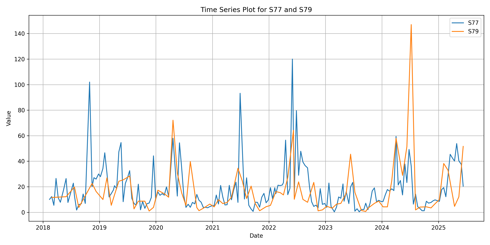
2. Merging Satellite Data with Chlorophyll-a Data
Due to data availability, datasets were merged on 2-day, 3-day, and 5-day windows. This allowed for more data pairings while trying to keep the dates and results of water date close to the date of satellite imagery collection.
Code below is for 2-day window, 3 and 5-day were changed by replacing the number 2s in Step 6.
# Import required libraries
import pandas as pd
from datetime import timedelta
# Step 1: Load the satellite indices CSV
satellite_fp = "Extracted_Indices_S77_and_S79.csv"
sat_df = pd.read_csv(satellite_fp)
# Step 2: Load the chlorophyll-a samples CSV
chl_fp = "S77_and_S79_Chlorophylla_Data_SamplesOnly.csv"
chl_df = pd.read_csv(chl_fp)
# Step 3: Clean column names
sat_df.columns = sat_df.columns.str.strip()
chl_df.columns = chl_df.columns.str.strip()
# Step 4: Convert date columns to datetime format
sat_df['date'] = pd.to_datetime(sat_df['date'], errors='coerce')
chl_df['Collection_Date'] = pd.to_datetime(chl_df['Collection_Date'], errors='coerce')
# Step 5: Initialize new column for Chlorophyll-a values
sat_df['Chlorophylla_Measurement'] = None
# Step 6: Match satellite rows to chlorophyll-a samples within ±2 days AND same Station_Id
for idx, sat_row in sat_df.iterrows():
sat_date = sat_row['date']
station_id = sat_row['Station_Id']
window_start = sat_date - timedelta(days=2)
window_end = sat_date + timedelta(days=2)
# Match on date range AND station ID
matches = chl_df[
(chl_df['Collection_Date'] >= window_start) &
(chl_df['Collection_Date'] <= window_end) &
(chl_df['Station ID'] == station_id)
].copy()
if not matches.empty:
# Find the sample closest in time
matches['TimeDiff'] = (matches['Collection_Date'] - sat_date).abs()
closest_sample = matches.loc[matches['TimeDiff'].idxmin()]
sat_df.at[idx, 'Chlorophylla_Measurement'] = closest_sample['Value']
# Step 7: Drop unmatched rows
sat_df = sat_df.dropna(subset=['Chlorophylla_Measurement'])
# Step 8: Save merged file
output_fp = "S77_S79_Satellite_Chlorophylla_for_ThresholdingValues_2DayWindow.csv"
sat_df.to_csv(output_fp, index=False)
print(f"✅ Merged dataset saved to: {output_fp}")
print(f"📊 Final dataset shape: {sat_df.shape}")
Accuracy results of the 2-day, 3-day, and 5-day windows:
2-day Window:
FAI ~ Chlorophyll-a: y = -4.4776 * x + 556.2196
NDCI ~ Chlorophyll-a: y = 0.0021 * x + -0.0458
Index thresholds for 40.0 µg/L Chlorophyll-a:
FAI Threshold: 84.4721
NDCI Threshold: 0.0398
3-day Window:
FAI ~ Chlorophyll-a: y = -1.3877 * x + 494.5230
NDCI ~ Chlorophyll-a: y = 0.0012 * x + 0.0306
Index thresholds for 40.0 µg/L Chlorophyll-a:
FAI Threshold: 65.3719
NDCI Threshold: 0.0535
5-day Window:
FAI ~ Chlorophyll-a: y = -3.4817 * x + 524.0014
NDCI ~ Chlorophyll-a: y = 0.0010 * x + 0.0366
Index thresholds for 40.0 µg/L Chlorophyll-a:
FAI Threshold: 384.7329
NDCI Threshold: 0.0766
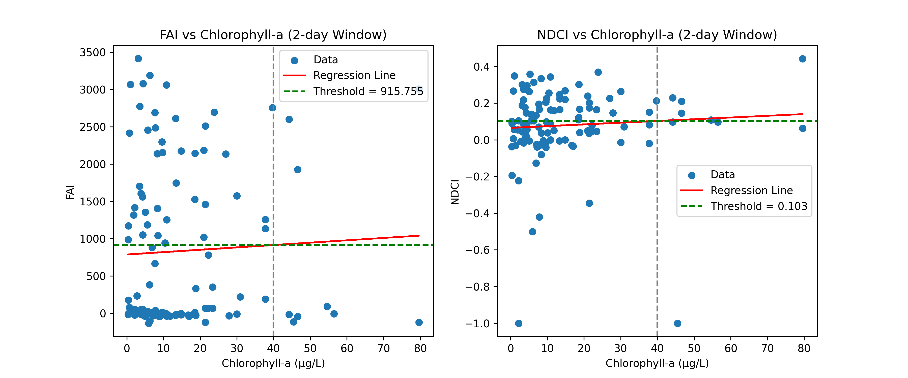
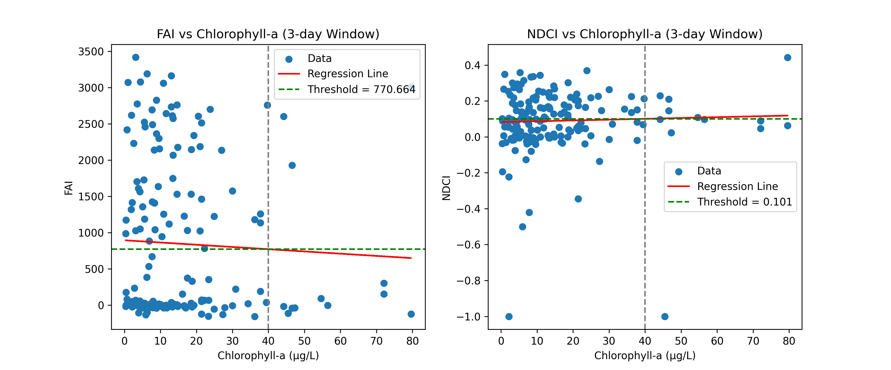
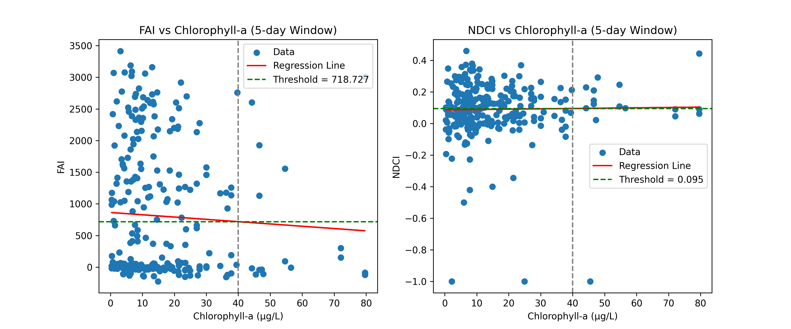
3. Isolating and Analyzing S79 Discharge and Water Temperature Data
Already have S77 file, just need S79 data to be isolated.
Starting with Water Temperature Data:
Code below loads filters the water temperature data to S79 and SAMP data.
import pandas as pd
# Load the CSV file
file_path = "WaterTemp_AllStations.csv"
df = pd.read_csv(file_path)
# Strip any extra whitespace in column names
df.columns = df.columns.str.strip()
# Filter for Station_Id == 'S77', 'S79'
df_s77_s79 = df[df['Station ID'].isin(['S77', 'S79'])]
# Filter for only Chlorophyll-a samples
df_s77_s79 = df_s77_s79[df_s77_s79['Sample Type New'] == 'SAMP']
# Preview the result
print(df_s77_s79.head())
print(df_s77_s79.shape)
# Export to a new CSV
output_path = "S77andS79_WaterTemp.csv"
df_s77_s79.to_csv(output_path, index=False)
Combining Water Temp, Discharge, and Satellite Data for S77 and S79
import pandas as pd
# --- Step 1: Define File Paths ---
satellite_file = 'S77_S79_Satellite_Chlorophylla_for_ThresholdingValues_3DayWindow.csv' #<-- Use your combined S77 & S79 satellite data file
discharge_file = 'S79andS77_DailyAverageDischargeData.csv' #<-- Your new combined discharge file
temp_file = 'S77andS79_WaterTemp.csv' #<-- Your combined temperature file (if available)
# --- Step 2: Load and Prepare Data ---
# Load main satellite data
try:
df_sat = pd.read_csv(satellite_file)
df_sat['date'] = pd.to_datetime(df_sat['date'])
print("Satellite data for S77 & S79 loaded.")
except FileNotFoundError:
print(f"Error: Could not find the satellite file '{satellite_file}'. Please update the filename.")
raise
# Load and prepare the discharge data
try:
df_discharge = pd.read_csv(discharge_file)
print("Discharge data loaded.")
# --- ADDED: Rename stations for consistency ---
station_name_map = {
'S77_S': 'S77',
'S79_TOT': 'S79'
}
df_discharge['Station'] = df_discharge['Station'].replace(station_name_map)
# ---
# Rename columns to be consistent for the merge
df_discharge = df_discharge[['Date', 'Station', 'Data Value']].rename(
columns={'Date': 'date', 'Station': 'Station_Id', 'Data Value': 'Discharge_cfs'}
)
df_discharge['date'] = pd.to_datetime(df_discharge['date'], format='%d-%b-%y')
except FileNotFoundError:
print(f"Warning: Could not find '{discharge_file}'. Discharge data will be missing.")
df_discharge = None
# Load and prepare temperature data
# This part assumes you have a combined temperature file with a 'Station_Id' column
try:
df_temp = pd.read_csv(temp_file)
df_temp = df_temp[df_temp['Test Name'] == 'Temperature']
df_temp['date'] = pd.to_datetime(df_temp['Collection_Date'])
df_temp = df_temp[['date', 'Station ID', 'Value']].rename(columns={'Value': 'Temperature_C', 'Station ID': 'Station_Id'})
print("Temperature data loaded.")
except FileNotFoundError:
print(f"Warning: Could not find '{temp_file}'. Temperature data will be missing.")
df_temp = None
# --- Step 3: Merge the DataFrames ---
df_merged = pd.merge(df_sat, df_discharge, on=['date', 'Station_Id'], how='left')
print("\nMerged with discharge data.")
if df_temp is not None:
# ✅ Correct sort order: date first, then Station_Id
df_merged = df_merged.sort_values(['date', 'Station_Id']).reset_index(drop=True)
df_temp = df_temp.sort_values(['date', 'Station_Id']).reset_index(drop=True)
df_final = pd.merge_asof(
df_merged,
df_temp,
on='date',
by='Station_Id',
direction='nearest',
tolerance=pd.Timedelta('3 days')
)
print("✅ Merged with temperature data.")
else:
df_final = df_merged
# --- Step 4: Inspect and Save ---
print("\n--- Final Merged DataFrame ---")
print(df_final.head())
print("\n--- Value Counts by Station ---")
print(df_final['Station_Id'].value_counts())
print("\n--- Missing Values in New Columns ---")
print(df_final[['Discharge_cfs', 'Temperature_C']].isnull().sum())
output_filename = 'S77_S79_Merged_Final_Corrected.csv'
df_final.to_csv(output_filename, index=False)
print(f"\nSuccessfully created the final merged file: '{output_filename}'") #<-- Use your combined S77 & S79 satellite data file
Switching to Discharge Data:
Code below filters to the S77_S station (same location as S77, but is where the discharge flow rate is measured).
import pandas as pd
# Load the CSV file
file_path = "S79andS77_DailyAverageDischargeData.csv"
df = pd.read_csv(file_path)
print(f'Original df size: {df.shape}')
# Strip any extra whitespace in column names
df.columns = df.columns.str.strip()
# Filter for Station_Id == 'S77'
df_s77 = df[df['Station'] == 'S77_S']
# Preview the result
print('')
print(df_s77.head())
print('')
print(f'Only S77 df size: {df_s77.shape}')
# Export to a new CSV
output_path = "S77_DischargeData.csv"
df_s77.to_csv(output_path, index=False)
Code to generate figure of discharge, temperature, and chlorophyll-a:
import pandas as pd
import matplotlib.pyplot as plt
import datetime # Import datetime for date objects
import matplotlib.dates as mdates # Import for date locators
plt.rcParams.update({
"font.size": 11, # Base font size
"axes.titlesize": 14, # Subplot titles
"axes.labelsize": 13, # Y-axis and X-axis labels
"xtick.labelsize": 17, # X tick labels
"ytick.labelsize": 13, # Y tick labels
"legend.fontsize": 11, # Legend
})
# --- Step 1: Define File Paths ---
# I've updated these based on the files you uploaded.
# You were loading the discharge file twice, so I've added the chlorophyll file.
file_discharge = r"C:\Users\Socce\Downloads\S79andS77_DailyAverageDischargeData_Cleaned_for_Figure.csv"
file_chloro = r"C:\Users\Socce\Downloads\S77_and_S79_Chlorophylla_Data_SamplesOnly_for_Figure.csv"
file_temp = r"C:\Users\Socce\Downloads\S77andS79_WaterTemp_for_Figure.csv"
# Define standard colors for consistency
COLOR_77 = '#0072B2' # A nice blue
COLOR_79 = '#D55E00' # A nice orange/red
# --- Step 2: Load and Process Discharge Data ---
try:
df_q = pd.read_csv(file_discharge)
df_q.columns = df_q.columns.str.strip()
# The date column is 'Date' in this file
df_q['Date'] = pd.to_datetime(df_q['Date'], errors='coerce')
df_q = df_q[df_q['Station'].isin(['S77', 'S79'])]
df_q['Value'] = pd.to_numeric(df_q['Value'], errors='coerce')
df_q = df_q.dropna(subset=['Date', 'Value'])
# *** KEY CHANGE: Pivot data from "long" to "wide" format ***
# This creates a new DataFrame where the index is the Date,
# and 'S77' and 'S79' are columns.
df_q_wide = df_q.pivot_table(index='Date', columns='Station', values='Value')
# --- FIX: Explicitly sort the DataFrame by index (Date) ---
# This prevents the line plot from "zig-zagging" if data is out of order.
df_q_wide = df_q_wide.sort_index()
except Exception as e:
print(f"Error processing Discharge file: {e}")
df_q_wide = pd.DataFrame() # Create empty dataframe to avoid plot errors
# --- Step 3: Load and Process Temperature Data ---
try:
df_t = pd.read_csv(file_temp)
df_t.columns = df_t.columns.str.strip()
# The date column is 'Collection_Date' in this file
df_t['Date'] = pd.to_datetime(df_t['Collection_Date'], errors='coerce')
# --- FIX: Normalize date to remove timestamp, allowing for daily averaging ---
df_t['Date'] = df_t['Date'].dt.normalize()
df_t = df_t[df_t['Station'].isin(['S77', 'S79'])]
# --- FIX: Use 'Sigfig Value' column, as 'Value' is often empty in this file ---
df_t['Value'] = pd.to_numeric(df_t['Sigfig Value'], errors='coerce')
df_t = df_t.dropna(subset=['Date', 'Value'])
# Pivot data
df_t_wide = df_t.pivot_table(index='Date', columns='Station', values='Value')
# --- FIX: Explicitly sort the DataFrame by index (Date) ---
df_t_wide = df_t_wide.sort_index()
except Exception as e:
print(f"Error processing Temperature file: {e}")
df_t_wide = pd.DataFrame()
# --- Step 4: Load and Process Chlorophyll-a Data ---
try:
df_c = pd.read_csv(file_chloro)
df_c.columns = df_c.columns.str.strip()
# The date column is 'Collection_Date' in this file
df_c['Date'] = pd.to_datetime(df_c['Collection_Date'], errors='coerce')
# --- FIX: Normalize date to remove timestamp, allowing for daily averaging ---
df_c['Date'] = df_c['Date'].dt.normalize()
df_c = df_c[df_c['Station'].isin(['S77', 'S79'])]
df_c['Value'] = pd.to_numeric(df_c['Value'], errors='coerce')
df_c = df_c.dropna(subset=['Date', 'Value'])
# Pivot data
df_c_wide = df_c.pivot_table(index='Date', columns='Station', values='Value')
# --- FIX: Explicitly sort the DataFrame by index (Date) ---
# This prevents the line plot from "zig-zagging" if data is out of order.
df_c_wide = df_c_wide.sort_index()
except Exception as e:
print(f"Error processing Chlorophyll file: {e}")
df_c_wide = pd.DataFrame()
# -----------------------------
# Step 5: Plot
# -----------------------------
plt.close("all")
# Create 3 subplots stacked vertically, sharing the x-axis (Date)
fig, axes = plt.subplots(3, 1, figsize=(12, 10), sharex=True)
# --- Add this block ---
for ax in axes:
ax.tick_params(labelbottom=True) # force showing x labels
ax.xaxis.set_tick_params(which="major", labelsize=9)
# ------------------------
ax_q, ax_t, ax_c = axes
# Subplot labels (outside, top-right, not bold)
ax_q.text(1.02, 1.02, "(a)", transform=ax_q.transAxes,
fontsize=11, va="bottom", ha="left")
ax_t.text(1.02, 1.02, "(b)", transform=ax_t.transAxes,
fontsize=11, va="bottom", ha="left")
ax_c.text(1.02, 1.02, "(c)", transform=ax_c.transAxes,
fontsize=11, va="bottom", ha="left")
# --- Plot Discharge (Line) ---
if "S77" in df_q_wide.columns:
# Now we plot against the index (which is the Date) and the 'S77' column
ax_q.plot(df_q_wide.index, df_q_wide["S77"], label="S-77", color=COLOR_77, linewidth=1.8)
if "S79" in df_q_wide.columns:
ax_q.plot(df_q_wide.index, df_q_wide["S79"], label="S-79", color=COLOR_79, linewidth=1.8)
ax_q.set_title("Daily Average Discharge")
ax_q.set_ylabel("Discharge (cfs)") # Added units
ax_q.legend(loc="upper left")
ax_q.grid(True, alpha=0.3)
# --- Plot Temperature (Line) ---
if "S77" in df_t_wide.columns:
ax_t.plot(df_t_wide.index, df_t_wide["S77"], label="S-77", color=COLOR_77, linewidth=1.8)
if "S79" in df_t_wide.columns:
ax_t.plot(df_t_wide.index, df_t_wide["S79"], label="S-79", color=COLOR_79, linewidth=1.8)
ax_t.set_title("Water Temperature")
ax_t.set_ylabel("Temperature (°C)")
ax_t.legend(loc="upper left")
ax_t.grid(True, alpha=0.3)
ax_t.set_ylim(top=37.5)
# --- Plot Chlorophyll-a (Line) ---
# NOTE: We are plotting a line on the .dropna() data.
# This connects only the valid data points and skips the
# large 'NaN' gaps, which is what was causing the
# zig-zag problem before.
if "S77" in df_c_wide.columns:
# Drop NaNs, so we only plot real data for S77
s77_data = df_c_wide["S77"].dropna()
# --- CHANGE: Plotting as a simple line, matching the other plots. ---
ax_c.plot(s77_data.index, s77_data, label="S-77", color=COLOR_77, linestyle='-', linewidth=1.8)
if "S79" in df_c_wide.columns:
# Drop NaNs, so we only plot real data for S79
s79_data = df_c_wide["S79"].dropna()
# --- CHANGE: Plotting as a simple line, matching the other plots. ---
ax_c.plot(s79_data.index, s79_data, label="S-79", color=COLOR_79, linestyle='-', linewidth=1.8)
ax_c.set_title("Chlorophyll-a")
ax_c.set_ylabel("Chl-a (µg/L)") # Added units
ax_c.legend(loc="upper left")
ax_c.grid(True, alpha=0.3)
for ax in axes:
ax.tick_params(
axis='both',
which='major',
length=6, # longer ticks
width=1.2, # thicker ticks
)
ax.tick_params(
axis='both',
which='minor',
length=4,
width=1.0,
)
# --- Ensure date tick labels resize correctly ---
for ax in axes:
ax.tick_params(axis='x', which='major', labelsize=12, length=6, width=1.2)
ax.tick_params(axis='x', which='minor', labelsize=10, length=4, width=1.0)
# --- Shared x-axis and export ---
# The 'sharex=True' in subplots handles the x-axis alignment automatically.
# We just need to set the label on the bottom-most plot.
# Set the specific date range for the x-axis
start_date = datetime.date(2019, 1, 1)
end_date = datetime.date(2024, 12, 31)
ax_c.set_xlim([start_date, end_date])
# --- Add major (year) and minor (mid-year) ticks ---
# Set major ticks to be at the start of each year
ax_c.xaxis.set_major_locator(mdates.YearLocator())
# Format major ticks to just show the year (e.g., "2020")
ax_c.xaxis.set_major_formatter(mdates.DateFormatter('%Y'))
# Set minor ticks to be in July (month=7)
ax_c.xaxis.set_minor_locator(mdates.MonthLocator(bymonth=7))
# No label for minor ticks
ax_c.xaxis.set_minor_formatter(mdates.DateFormatter(''))
ax_c.set_xlabel("Date")
fig.tight_layout()
fig.savefig("S77_S79_TimeSeries_PublishableFigure.png", dpi=300)
print("Saved: S77_S79_TimeSeries.png and S77_S79_TimeSeries.png")
# Also show the plot
plt.show()
Visualize discharge, temperature, and Chlorophyll-a data:
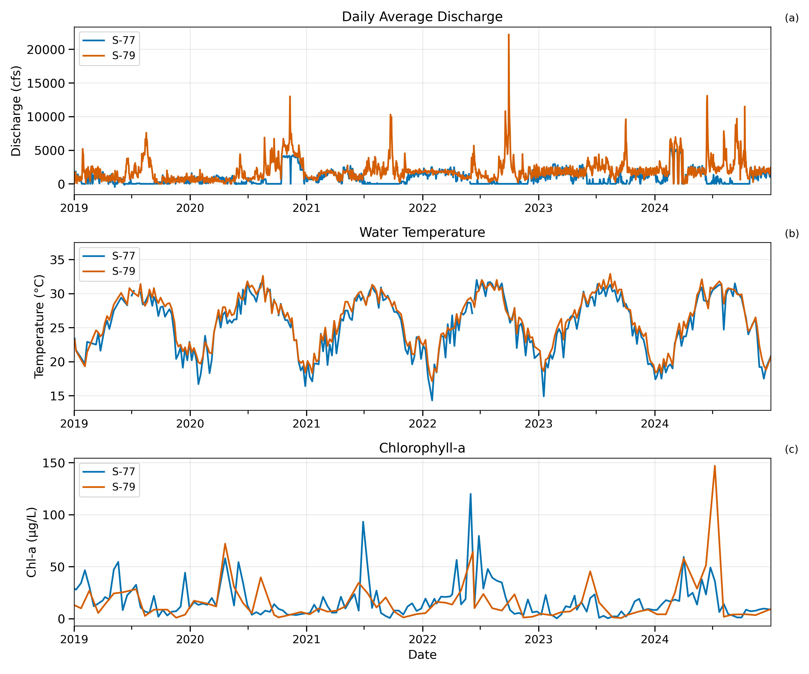4. Merging Temperature and Discharge Data to Satellite and Chlorophyll-a Data for S77 and S79
Merging the datasets together, utilizing the 3-day window due to highest accuracy from the window periods.
Applying a 3-day window to the temperature and discharge data as well, to better match up to the Satellite and Chlorophyll-a data:
import pandas as pd
# --- Step 1: Define File Paths ---
satellite_file = 'S77_S79_Satellite_Chlorophylla_for_ThresholdingValues_3DayWindow.csv' #<-- Use your combined S77 & S79 satellite data file
discharge_file = 'S79andS77_DailyAverageDischargeData.csv' #<-- Your new combined discharge file
temp_file = 'S77andS79_WaterTemp.csv' #<-- Your combined temperature file (if available)
# --- Step 2: Load and Prepare Data ---
# Load main satellite data
try:
df_sat = pd.read_csv(satellite_file)
df_sat['date'] = pd.to_datetime(df_sat['date'])
print("Satellite data for S77 & S79 loaded.")
except FileNotFoundError:
print(f"Error: Could not find the satellite file '{satellite_file}'. Please update the filename.")
raise
# Load and prepare the discharge data
try:
df_discharge = pd.read_csv(discharge_file)
print("Discharge data loaded.")
# --- ADDED: Rename stations for consistency ---
station_name_map = {
'S77_S': 'S77',
'S79_TOT': 'S79'
}
df_discharge['Station'] = df_discharge['Station'].replace(station_name_map)
# ---
# Rename columns to be consistent for the merge
df_discharge = df_discharge[['Date', 'Station', 'Data Value']].rename(
columns={'Date': 'date', 'Station': 'Station_Id', 'Data Value': 'Discharge_cfs'}
)
df_discharge['date'] = pd.to_datetime(df_discharge['date'], format='%d-%b-%y')
except FileNotFoundError:
print(f"Warning: Could not find '{discharge_file}'. Discharge data will be missing.")
df_discharge = None
# Load and prepare temperature data
# This part assumes you have a combined temperature file with a 'Station_Id' column
try:
df_temp = pd.read_csv(temp_file)
df_temp = df_temp[df_temp['Test Name'] == 'Temperature']
df_temp['date'] = pd.to_datetime(df_temp['Collection_Date'])
df_temp = df_temp[['date', 'Station ID', 'Value']].rename(columns={'Value': 'Temperature_C', 'Station ID': 'Station_Id'})
print("Temperature data loaded.")
except FileNotFoundError:
print(f"Warning: Could not find '{temp_file}'. Temperature data will be missing.")
df_temp = None
# --- Step 3: Merge the DataFrames ---
df_merged = pd.merge(df_sat, df_discharge, on=['date', 'Station_Id'], how='left')
print("\nMerged with discharge data.")
if df_temp is not None:
# ✅ Correct sort order: date first, then Station_Id
df_merged = df_merged.sort_values(['date', 'Station_Id']).reset_index(drop=True)
df_temp = df_temp.sort_values(['date', 'Station_Id']).reset_index(drop=True)
df_final = pd.merge_asof(
df_merged,
df_temp,
on='date',
by='Station_Id',
direction='nearest',
tolerance=pd.Timedelta('3 days')
)
print("✅ Merged with temperature data.")
else:
df_final = df_merged
# --- Step 4: Inspect and Save ---
print("\n--- Final Merged DataFrame ---")
print(df_final.head())
print("\n--- Value Counts by Station ---")
print(df_final['Station_Id'].value_counts())
print("\n--- Missing Values in New Columns ---")
print(df_final[['Discharge_cfs', 'Temperature_C']].isnull().sum())
output_filename = 'S77_S79_Merged_Final_Corrected.csv'
df_final.to_csv(output_filename, index=False)
print(f"\nSuccessfully created the final merged file: '{output_filename}'") #<-- Use your combined S77 & S79 satellite data file
5. Exploratory Data Analysis Before Models
Recommended by AI to better understand the dataset and generate more figures
Code block recommended by AI for this analysis:
import pandas as pd
import matplotlib.pyplot as plt
import seaborn as sns
# --- Step 1: Load Your Final Merged Dataset ---
# Updated file path to your new combined file
file_path = 'S77_S79_Merged_Final_Corrected.csv'
try:
df = pd.read_csv(file_path)
# Ensure the 'date' column is a datetime object for plotting
df['date'] = pd.to_datetime(df['date'])
print("Merged dataset loaded successfully.")
except FileNotFoundError:
print(f"FATAL ERROR: The file '{file_path}' was not found.")
print("Please ensure the merged CSV from the previous step is in the same directory.")
raise
# --- Get the unique stations from the 'Station_Id' column ---
stations = df['Station_Id'].unique()
print(f"Stations found in the dataset: {stations}")
# --- Loop through each station and generate plots ---
for station in stations:
print(f"\n--- Processing data for Station: {station} ---")
# --- Step 2: Prepare Data for Analysis (for the current station) ---
# Filter the dataframe for the current station
df_station = df[df['Station_Id'] == station].copy()
# For robust analysis, we'll drop rows that have missing environmental data
df_analysis = df_station.dropna(subset=['Temperature_C', 'Discharge_cfs']).copy()
print(f"Original data points for {station}: {len(df_station)}")
print(f"Data points for analysis (after removing nulls): {len(df_analysis)}")
if len(df_analysis) < 2:
print(f"Skipping plots for {station} due to insufficient data after cleaning.")
continue
# --- Step 3: Visualize and Save Time Series Data ---
print(f"Generating Time Series plots for {station}...")
fig, axes = plt.subplots(3, 1, figsize=(15, 12), sharex=True)
fig.suptitle(f'Time Series of Key Variables at Station {station}', fontsize=18)
# Plot 1: Chlorophyll-a
axes[0].plot(df_analysis['date'], df_analysis['Chlorophylla_Measurement'], color='green', marker='o', linestyle='-')
axes[0].set_ylabel('Chlorophyll-a (µg/L)')
axes[0].set_title('Chlorophyll-a Measurements')
axes[0].grid(True)
# Plot 2: Water Temperature
axes[1].plot(df_analysis['date'], df_analysis['Temperature_C'], color='red', marker='o', linestyle='-')
axes[1].set_ylabel('Temperature (°C)')
axes[1].set_title('Water Temperature')
axes[1].grid(True)
# Plot 3: Discharge
axes[2].plot(df_analysis['date'], df_analysis['Discharge_cfs'], color='blue', marker='o', linestyle='-')
axes[2].set_ylabel('Discharge (cfs)')
axes[2].set_title('River Discharge')
axes[2].set_xlabel('Date')
axes[2].grid(True)
plt.tight_layout(rect=[0, 0, 1, 0.96])
# --- MODIFIED LINE: Save the figure with a station-specific name ---
plt.savefig(f'{station}_time_series_plots.png', dpi=300)
plt.close() # Close the plot to free up memory
plt.show()
# --- Step 4: Visualize and Save Relationships with Scatter Plots ---
print(f"Generating Scatter plots for {station}...")
plt.figure(figsize=(16, 7))
# Scatter 1: Temperature vs. Chlorophyll-a
plt.subplot(1, 2, 1)
sns.scatterplot(data=df_analysis, x='Temperature_C', y='Chlorophylla_Measurement', alpha=0.7)
plt.title(f'{station}: Temperature vs. Chlorophyll-a')
plt.xlabel('Water Temperature (°C)')
plt.ylabel('Chlorophyll-a (µg/L)')
plt.grid(True)
# Scatter 2: Discharge vs. Chlorophyll-a
plt.subplot(1, 2, 2)
sns.scatterplot(data=df_analysis, x='Discharge_cfs', y='Chlorophylla_Measurement', alpha=0.7)
plt.title(f'{station}: Discharge vs. Chlorophyll-a')
plt.xlabel('River Discharge (cfs)')
plt.ylabel('Chlorophyll-a (µg/L)')
plt.grid(True)
plt.tight_layout()
plt.show()
# --- MODIFIED LINE: Save the figure with a station-specific name ---
plt.savefig(f'{station}_scatter_plots.png', dpi=300)
plt.close() # Close the plot
# --- Step 5: Quantify and Save Relationships with a Correlation Matrix ---
print(f"Generating Correlation Matrix Heatmap for {station}...")
# Select only the key numerical columns for the correlation matrix
correlation_cols = ['Chlorophylla_Measurement', 'ndci', 'fai', 'Temperature_C', 'Discharge_cfs']
correlation_matrix = df_analysis[correlation_cols].corr()
# Create a heatmap to visualize the matrix
plt.figure(figsize=(10, 8))
sns.heatmap(correlation_matrix, annot=True, cmap='coolwarm', fmt='.2f', linewidths=.5)
plt.title(f'Correlation Matrix of Key Variables at {station}')
# --- MODIFIED LINE: Save the figure with a station-specific name ---
plt.savefig(f'{station}_correlation_heatmap.png', dpi=300)
plt.show()
plt.close() # Close the plot
print("\nExploratory Data Analysis Complete. All plots saved to your directory.")


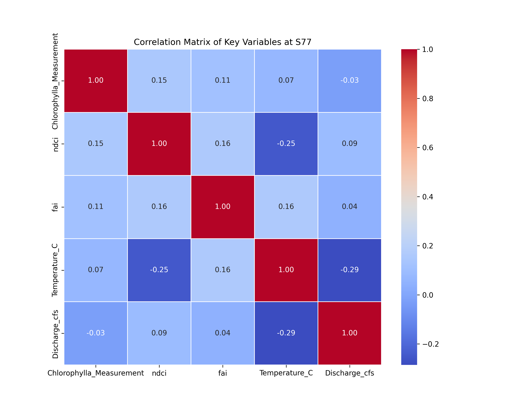 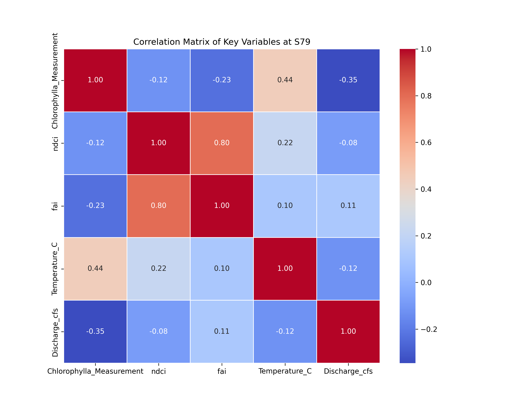
6. Random Forest Model
Recommendation of Random Forest Classifier for classification model
Python script will:
- Split the data into training and testing sets.
- Train a Random Forest Classifier.
- Evaluate its performance on the test set.
- Analyze which features were most important for its predictions.
import pandas as pd
import matplotlib.pyplot as plt
import seaborn as sns
from sklearn.model_selection import train_test_split
from sklearn.ensemble import RandomForestClassifier
from sklearn.metrics import classification_report, confusion_matrix, accuracy_score
# --- Step 1: Load and Prepare Data ---
file_path = 'S77_Merged_Data_3DayWindow.csv'
try:
df = pd.read_csv(file_path)
except FileNotFoundError:
print(f"FATAL ERROR: The file '{file_path}' was not found.")
raise
# Prepare the final dataset for modeling
df_model = df.dropna(subset=['Temperature_C', 'Discharge_cfs']).copy()
bloom_threshold = 20.0
df_model['Bloom'] = (df_model['Chlorophylla_Measurement'] >= bloom_threshold).astype(int)
# Define our features (X) and target (y)
features = ['ndci', 'fai', 'Temperature_C', 'Discharge_cfs']
X = df_model[features]
y = df_model['Bloom']
print("Data prepared for modeling.")
print(f"Features (X): {X.columns.tolist()}")
print(f"Target (y): 'Bloom'")
# --- Step 2: Split Data into Training and Testing Sets ---
# We'll use 80% for training and 20% for testing
# stratify=y ensures the proportion of blooms is the same in train and test sets
X_train, X_test, y_train, y_test = train_test_split(
X, y, test_size=0.2, random_state=42, stratify=y
)
print(f"\nData split into {len(X_train)} training samples and {len(X_test)} testing samples.")
# --- Step 3: Train the Random Forest Classifier ---
# Initialize the model with some standard parameters
# n_estimators is the number of "trees" in the forest
# random_state ensures the results are reproducible
model = RandomForestClassifier(n_estimators=100, random_state=42, class_weight='balanced')
# Train the model on the training data
model.fit(X_train, y_train)
print("\nRandom Forest model trained successfully.")
# --- Step 4: Evaluate the Model on Unseen Test Data ---
# Make predictions on the test set
y_pred = model.predict(X_test)
# --- Accuracy ---
accuracy = accuracy_score(y_test, y_pred)
print(f"\n--- Model Evaluation ---")
print(f"Overall Accuracy: {accuracy:.2%}")
# --- Classification Report ---
# This shows precision, recall, and F1-score for each class
print("\nClassification Report:")
print(classification_report(y_test, y_pred, target_names=['Non-Bloom', 'Bloom']))
# --- Confusion Matrix ---
# This shows the details of correct and incorrect predictions
print("Confusion Matrix:")
cm = confusion_matrix(y_test, y_pred)
plt.figure(figsize=(8, 6))
sns.heatmap(cm, annot=True, fmt='g', cmap='Blues',
xticklabels=['Predicted Non-Bloom', 'Predicted Bloom'],
yticklabels=['Actual Non-Bloom', 'Actual Bloom'])
plt.title('Confusion Matrix')
plt.savefig('confusion_matrix.png', dpi=300)
plt.show()
# --- Step 5: Analyze Feature Importance ---
# Check which features the model found most predictive
importances = model.feature_importances_
feature_importance_df = pd.DataFrame({
'Feature': features,
'Importance': importances
}).sort_values(by='Importance', ascending=False)
print("\n--- Feature Importance ---")
print(feature_importance_df)
# Plot feature importances
plt.figure(figsize=(10, 6))
sns.barplot(x='Importance', y='Feature', data=feature_importance_df)
plt.title('Feature Importances from Random Forest Model')
plt.savefig('feature_importances.png', dpi=300)
plt.show()
Output of Code:
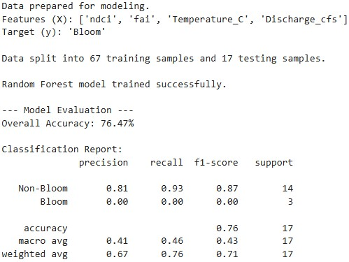 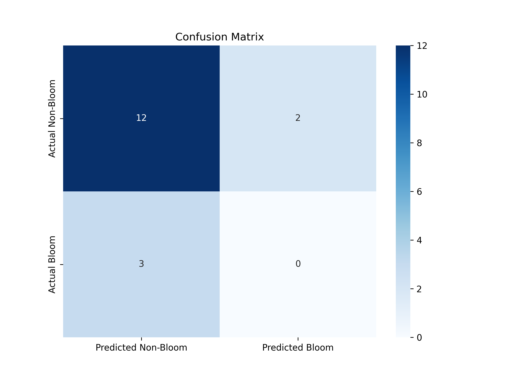
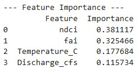
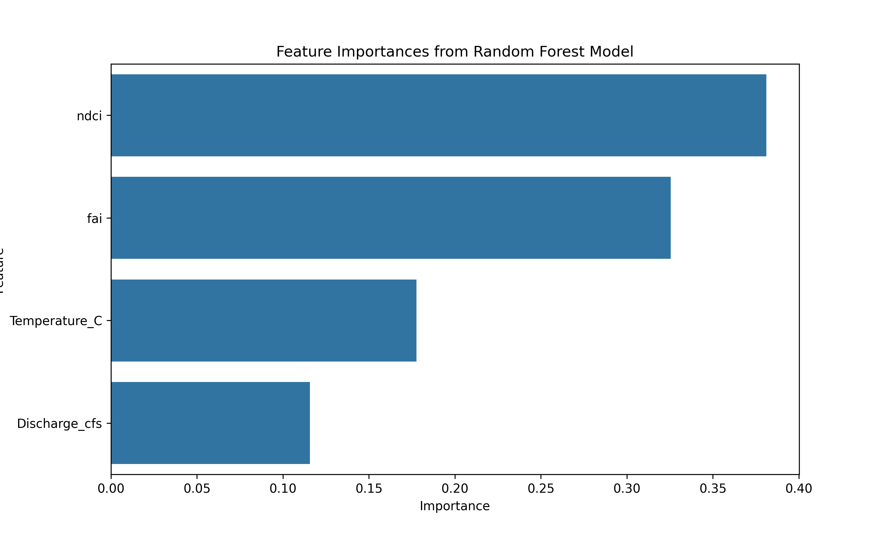
7. XGBoost Model
Recommendation of XGBoost for classification model
Python script will:
- Split the data into training and testing sets.
- Train a XGBoost Classifier.
- Evaluate its performance on the test set.
- Analyze which features were most important for its predictions.
import pandas as pd
import matplotlib.pyplot as plt
import seaborn as sns
from sklearn.model_selection import train_test_split
from xgboost import XGBClassifier
from sklearn.metrics import classification_report, confusion_matrix, accuracy_score
# --- Step 1: Load and Prepare Data ---
file_path = 'S77_S79_Merged_Final_Corrected.csv'
try:
df = pd.read_csv(file_path)
except FileNotFoundError:
print(f"FATAL ERROR: The file '{file_path}' was not found.")
raise
# Drop rows with missing data
df_model = df.dropna(subset=['Chlorophylla_Measurement', 'ndci', 'fai', 'Temperature_C', 'Discharge_cfs']).copy()
# Set the bloom threshold to the FDEP standard
bloom_threshold = 20.0
df_model['Bloom'] = (df_model['Chlorophylla_Measurement'] >= bloom_threshold).astype(int)
# One-Hot Encode the Station_Id
df_model = pd.get_dummies(df_model, columns=['Station_Id'], prefix='Station')
print("Data prepared for XGBoost modeling (20.0 µg/L threshold).")
print("Bloom distribution:\n", df_model['Bloom'].value_counts())
# Define features (X) and target (y)
features = ['ndci', 'fai', 'Temperature_C', 'Discharge_cfs', 'Station_S77', 'Station_S79']
X = df_model[features]
y = df_model['Bloom']
# --- Step 2: Calculate Scale Pos Weight for Imbalance ---
# This is the method XGBoost uses to handle imbalanced classes.
# It's the ratio of negative class instances to positive class instances.
neg_count = y.value_counts()[0]
pos_count = y.value_counts()[1]
scale_pos_weight_value = neg_count / pos_count
print(f"\nCalculated 'scale_pos_weight': {scale_pos_weight_value:.2f}")
# --- Step 3: Split Data into Training and Testing Sets ---
X_train, X_test, y_train, y_test = train_test_split(
X, y, test_size=0.25, random_state=42, stratify=y
)
print(f"Data split into {len(X_train)} training samples and {len(X_test)} testing samples.")
# --- Step 4: Train the XGBoost Classifier ---
# We use the calculated scale_pos_weight to force the model to pay attention to the rare 'Bloom' class.
# 'eval_metric='logloss'' is a standard choice for binary classification.
model = XGBClassifier(
objective='binary:logistic',
eval_metric='logloss',
scale_pos_weight=scale_pos_weight_value,
use_label_encoder=False,
random_state=42
)
model.fit(X_train, y_train)
print("\nXGBoost model trained successfully.")
# --- Step 5: Evaluate the Model ---
y_pred = model.predict(X_test)
accuracy = accuracy_score(y_test, y_pred)
print(f"\n--- XGBoost Model Evaluation (Threshold: {bloom_threshold} µg/L) ---")
print(f"Overall Accuracy: {accuracy:.2%}")
print("\nClassification Report:")
print(classification_report(y_test, y_pred, target_names=['Non-Bloom', 'Bloom']))
# Confusion Matrix
print("Confusion Matrix:")
cm = confusion_matrix(y_test, y_pred)
plt.figure(figsize=(8, 6))
sns.heatmap(cm, annot=True, fmt='g', cmap='Purples',
xticklabels=['Predicted Non-Bloom', 'Predicted Bloom'],
yticklabels=['Actual Non-Bloom', 'Actual Bloom'])
plt.title(f'XGBoost Confusion Matrix (Bloom Threshold = {bloom_threshold} µg/L)')
plt.savefig(f'SXGboost_confusion_matrix_{int(bloom_threshold)}ugL.png', dpi=300)
plt.show()
# --- Step 6: Analyze Feature Importance ---
importances = model.feature_importances_
feature_importance_df = pd.DataFrame({
'Feature': features,
'Importance': importances
}).sort_values(by='Importance', ascending=False)
print("\n--- XGBoost Feature Importance ---")
print(feature_importance_df)
plt.figure(figsize=(10, 6))
sns.barplot(x='Importance', y='Feature', data=feature_importance_df, palette='magma')
plt.title(f'XGBoost Feature Importances (Bloom Threshold = {bloom_threshold} µg/L)')
plt.savefig(f'XGBoost_feature_importances_{int(bloom_threshold)}ugL.png', dpi=300)
plt.show()
Output of Code:
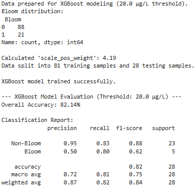 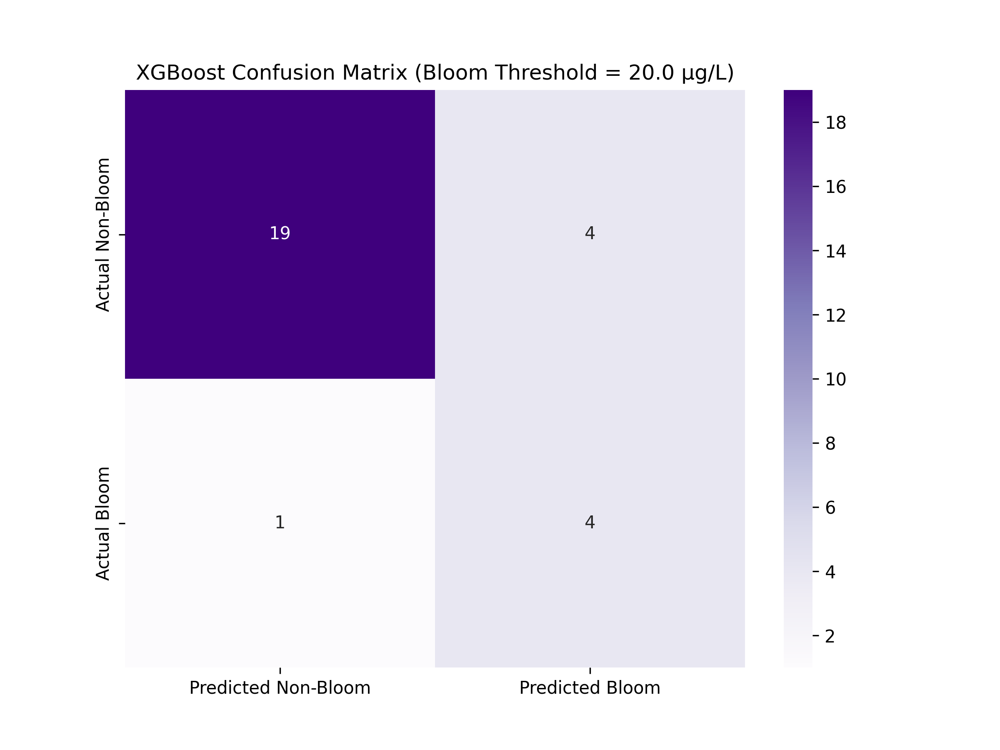
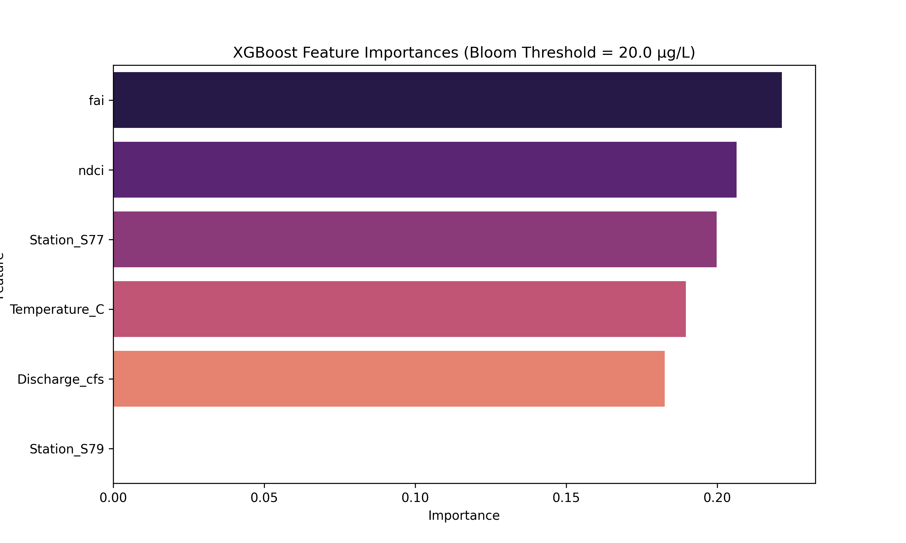
Gemini analysis of performance:
This model provides a more aggressive and sensitive approach to bloom detection. Model Performance: Accuracy: 82.14% Behavior: This is the most practically useful model for general monitoring. It acts as an "eager alarm" with a very high recall of 80%, successfully identifying 4 out of 5 actual blooms.The trade-off is a lower precision (50%), meaning it produces some false alarms. Key Predictive Features:
- fai & ndci (Satellite Data): XGBoost found that the satellite-derived indices were the most powerful predictors.
- Station_S77: The model learned that being at Station S77 was a very strong predictor, treating it as a special case compared to the "default" S79.
- Temperature & Discharge: These physical factors were secondary to the satellite and location data.
Modification to 40.0 threshold:
import pandas as pd
import matplotlib.pyplot as plt
import seaborn as sns
from sklearn.model_selection import train_test_split
from sklearn.ensemble import RandomForestClassifier
from sklearn.metrics import classification_report, confusion_matrix, accuracy_score
# --- Step 1: Load and Prepare Data ---
file_path = 'S77_S79_Merged_Final_Corrected.csv'
try:
df = pd.read_csv(file_path)
except FileNotFoundError:
print(f"FATAL ERROR: The file '{file_path}' was not found.")
raise
# Drop rows where key features or the target variable are missing
df_model = df.dropna(subset=['Chlorophylla_Measurement', 'ndci', 'fai', 'Temperature_C', 'Discharge_cfs']).copy()
# --- MODIFIED: Set the bloom threshold to the FDEP standard ---
bloom_threshold = 40.0
df_model['Bloom'] = (df_model['Chlorophylla_Measurement'] >= bloom_threshold).astype(int)
# One-Hot Encode the Station_Id
df_model = pd.get_dummies(df_model, columns=['Station_Id'], prefix='Station')
print("Data prepared for modeling with a 40.0 µg/L threshold.")
print("New bloom distribution:\n", df_model['Bloom'].value_counts())
# Define our features (X) and target (y)
features = ['ndci', 'fai', 'Temperature_C', 'Discharge_cfs', 'Station_S77', 'Station_S79']
X = df_model[features]
y = df_model['Bloom']
print(f"\nFeatures (X): {X.columns.tolist()}")
print(f"Target (y): 'Bloom (>= 40 µg/L)'")
# --- Step 2: Split Data into Training and Testing Sets ---
X_train, X_test, y_train, y_test = train_test_split(
X, y, test_size=0.25, random_state=42, stratify=y
)
print(f"\nData split into {len(X_train)} training samples and {len(X_test)} testing samples.")
# --- Step 3: Train the Random Forest Classifier ---
model = RandomForestClassifier(n_estimators=100, random_state=42, class_weight='balanced')
model.fit(X_train, y_train)
print("\nRandom Forest model trained successfully.")
# --- Step 4: Evaluate the Model on Unseen Test Data ---
y_pred = model.predict(X_test)
# --- Metrics ---
accuracy = accuracy_score(y_test, y_pred)
print(f"\n--- Model Evaluation (Threshold: {bloom_threshold} µg/L) ---")
print(f"Overall Accuracy: {accuracy:.2%}")
print("\nClassification Report:")
print(classification_report(y_test, y_pred, target_names=['Non-Bloom', 'Bloom']))
# --- Confusion Matrix ---
print("Confusion Matrix:")
cm = confusion_matrix(y_test, y_pred)
plt.figure(figsize=(8, 6))
sns.heatmap(cm, annot=True, fmt='g', cmap='Oranges',
xticklabels=['Predicted Non-Bloom', 'Predicted Bloom'],
yticklabels=['Actual Non-Bloom', 'Actual Bloom'])
plt.title(f'Confusion Matrix (Bloom Threshold = {bloom_threshold} µg/L)')
plt.savefig(f'S77andS79_40Threshold_confusion_matrix_{int(bloom_threshold)}ugL.png', dpi=300)
plt.show()
# --- Step 5: Analyze Feature Importance ---
importances = model.feature_importances_
feature_importance_df = pd.DataFrame({
'Feature': features,
'Importance': importances
}).sort_values(by='Importance', ascending=False)
print("\n--- Feature Importance ---")
print(feature_importance_df)
plt.figure(figsize=(10, 6))
sns.barplot(x='Importance', y='Feature', data=feature_importance_df, palette='plasma')
plt.title(f'Feature Importances (Bloom Threshold = {bloom_threshold} µg/L)')
plt.savefig(f'S77andS79_40Threshold_feature_importances_{int(bloom_threshold)}ugL.png', dpi=300)
plt.show()
Output of Code:
 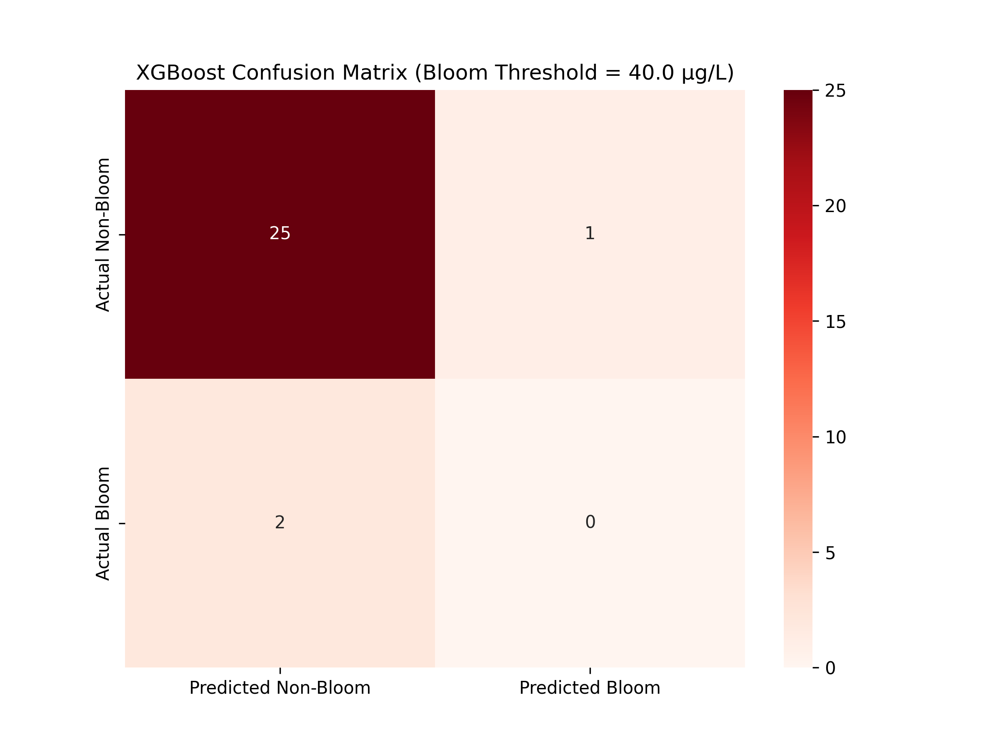
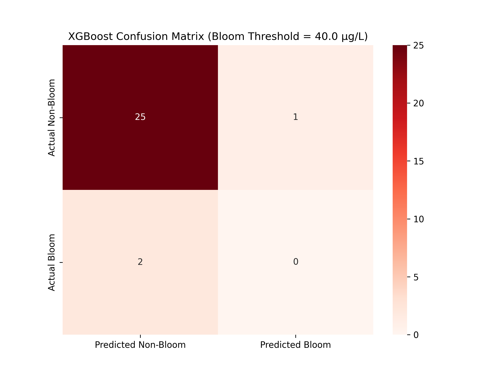

Gemini analysis of performance:
This model provides a more aggressive and sensitive approach to bloom detection. Model Performance: Accuracy: 89.29% Behavior: Like the Random Forest model, XGBoost fails to identify any blooms at this high threshold, achieving a `recall` of 0.00. Even with techniques to handle the imbalanced data, the event rarity is too extreme. Key Predictive Features:- Temperature_C: The model identified **water temperature** as the overwhelmingly dominant predictive feature, contributing more than 50% of the importance.
- ndci: The satellite index is the clear secondary factor.
- Station Location: The model assigns **zero importance** to location, strongly implying these extreme blooms are driven by large-scale phenomena (like a heatwave) that render local differences irrelevant.
8. LSTM Model
LSTM Model recommendation to improve performance
Need to extract NDCI and FAI for each year.
Each year from 2019 to 2024 was taken modifying the start and end dates in the following code:
import ee
import geemap
# --- Step 1: Authenticate and Initialize Earth Engine ---
try:
geemap.ee_initialize()
print("Google Earth Engine has been successfully initialized.")
except Exception as e:
print(f"Authentication or Initialization failed: {e}")
raise e
# --- Step 2: Load Your Custom AOI Polygon from Assets ---
try:
USER_AOI_PATH = 'projects/ee-hewittns01/assets/CaloosahatcheeRiver_and_CRE'
aoi_polygon = ee.FeatureCollection(USER_AOI_PATH).geometry()
print(f"Successfully loaded custom AOI: {USER_AOI_PATH}")
except Exception as e:
print(f"FATAL ERROR: Could not load your AOI from GEE Assets.")
print(f"Please check your asset path: {USER_AOI_PATH}")
raise e
# --- Step 3: Create a 10m Water Mask (Same as before) ---
try:
s2_composite = (ee.ImageCollection('COPERNICUS/S2_SR_HARMONIZED')
.filterBounds(aoi_polygon)
.filterDate('2023-01-01', '2023-05-01')
.filter(ee.Filter.lt('CLOUDY_PIXEL_PERCENTAGE', 10))
.median()
.clip(aoi_polygon))
water_mask = s2_composite.normalizedDifference(['B3', 'B11']).gt(0)
water_only_image = water_mask.selfMask()
print("Successfully created 10m water mask from S2 composite.")
except Exception as e:
print(f"Fatal Error: Could not create 10m water mask.")
raise e
# --- Step 4: Generate 5,000 Water-Only Points (Same as before) ---
try:
points_with_water_value = water_only_image.reduceRegions(
collection=ee.FeatureCollection.randomPoints(aoi_polygon, 20000, 42),
reducer=ee.Reducer.mean(),
scale=10
)
water_points = points_with_water_value.filter(ee.Filter.notNull(['mean']))
sampling_points = water_points.limit(5000) \
.map(lambda f: f.set('point_id', f.id())) \
.select(['point_id'])
point_count = sampling_points.size().getInfo()
print(f"Successfully filtered to {point_count} final water-only points.")
except Exception as e:
print(f"Fatal Error: Could not filter points.")
raise e
# --- Step 5: Define GEE Functions and Parameters ---
START_DATE = '2019-01-01' # Starting with 2019
END_DATE = '2019-12-31'
EXPORT_FOLDER = 'GEE_CSV_Exports'
CSV_FILENAME = 'Extracted_NDCI_FAI_v16_DUMMY_FIX_2019' # New name
def mask_s2_clouds(image):
scl = image.select('SCL')
good_quality = scl.eq(4).Or(scl.eq(5)).Or(scl.eq(6)).Or(scl.eq(7))
return image.updateMask(good_quality)
def add_ndci(image):
return image.addBands(image.normalizedDifference(['B5', 'B4']).rename('ndci'))
def add_fai(image):
rhos_prime = image.select('B4').add(image.select('B11').subtract(image.select('B4')).multiply(0.1873))
return image.addBands(image.select('B8').subtract(rhos_prime).rename('fai'))
# --- Step 6: Create the REAL Image Collection ---
s2_collection = (ee.ImageCollection('COPERNICUS/S2_SR_HARMONIZED')
.filterBounds(aoi_polygon)
.filterDate(START_DATE, END_DATE) # Get real 2019 images
.filter(ee.Filter.lt('CLOUDY_PIXEL_PERCENTAGE', 30)))
# --- Step 7: ⭐️ THIS IS THE FIX ⭐️ ---
# Set the dummy image date to ONE DAY BEFORE the start date.
DUMMY_DATE = ee.Date(START_DATE).advance(-1, 'day')
# Create a FAKE image with valid SCL and band values
dummy_image = ee.Image.constant([665, 833, 1613, 6, 704]) \
.rename(['B4', 'B8', 'B11', 'SCL', 'B5']) \
.cast({'B4': 'int32', 'B8': 'int32', 'B11': 'int32', 'SCL': 'int32', 'B5': 'int32'}) \
.set('system:time_start', DUMMY_DATE.millis()) # Set its date to 2018-12-31
# Merge the dummy image with the real collection and SORT
# This guarantees the dummy image is first.
combined_collection = s2_collection.merge(ee.ImageCollection([dummy_image])) \
.sort('system:time_start')
# This is the fast function that will unmask
def calculate_and_unmask(image):
masked_image = mask_s2_clouds(image)
image_with_indices = add_ndci(add_fai(masked_image))
return image_with_indices.select(['ndci', 'fai']).unmask(-9999)
# Map over the COMBINED collection
s2_with_indices = combined_collection.map(calculate_and_unmask)
# --- Step 8: Define Extraction and Export (The Fast Way) ---
def extract_point_values(image):
image_date = image.date().format('YYYY-MM-dd')
def set_properties(feature_with_indices):
geom = feature_with_indices.geometry()
coords = geom.coordinates()
return ee.Feature(geom, {
'point_id': feature_with_indices.get('point_id'),
'date': image_date,
'longitude': coords.get(0),
'latitude': coords.get(1),
'ndci': feature_with_indices.get('ndci'), # Will be -9999 or real value
'fai': feature_with_indices.get('fai') # Will be -9999 or real value
})
return image.reduceRegions(
collection=sampling_points,
reducer=ee.Reducer.mean(),
scale=10
).map(set_properties)
extracted_features = s2_with_indices.map(extract_point_values).flatten()
# --- Step 9: Export the Final Collection ---
print(f"\n--- Initiating Final CSV Export: '{CSV_FILENAME}' ---")
task = ee.batch.Export.table.toDrive(
collection=extracted_features,
description=CSV_FILENAME,
folder=EXPORT_FOLDER,
fileNamePrefix=CSV_FILENAME,
fileFormat='CSV'
)
task.start()
print(f"Export task '{CSV_FILENAME}' has been started.")
print(f"Once complete, the CSV will be in your Google Drive / {EXPORT_FOLDER} folder.")
# --- Step 10 (Optional): Display Map to Verify Points ---
Map = geemap.Map()
Map.centerObject(aoi_polygon, 11)
Map.addLayer(water_only_image, {'palette': 'blue'}, '10m Water Mask')
Map.addLayer(sampling_points, {'color': 'red', 'pointSize': 1}, '5000 Final Water Points')
Map
Creating Lagged Features
import pandas as pd
# --- 1. Load Your Data ---
df_discharge = pd.read_csv("C:/Users/Socce/Downloads/S79andS77_DailyAverageDischargeData_Cleaned.xlsx")
df_gee = pd.read_csv('gee_export.csv') # This is your big new file
# --- 2. Prepare Discharge Data ---
# Convert date to datetime objects
df_discharge['date'] = pd.to_datetime(df_discharge['date'])
# Set date as the index (this makes shifting easy)
df_discharge = df_discharge.set_index('date')
# Rename the flow column for clarity
df_discharge = df_discharge.rename(columns={'Flow_cfs': 'discharge'})
# --- 3. Create Your Lagged Discharge Variables ---
# This is the key to your hypothesis
for lag_days in range(1, 22): # Let's test a 1 to 21 day lag
df_discharge[f'discharge_lag_{lag_days}d'] = df_discharge['discharge'].shift(lag_days)
# --- 4. Prepare GEE Data ---
df_gee['date'] = pd.to_datetime(df_gee['date'])
# Also extract lat/lon from the .geo column GEE creates
# (This part might need a little adjustment based on your CSV export)
df_gee['longitude'] = df_gee['.geo'].apply(lambda x: eval(x)['coordinates'][0])
df_gee['latitude'] = df_gee['.geo'].apply(lambda x: eval(x)['coordinates'][1])
# --- 5. Merge Your Datasets ---
# Join the satellite data with the lagged discharge data
df_final = pd.merge(
df_gee,
df_discharge,
on='date',
how='left'
)
# Get all your discharge lag columns
lag_cols = [col for col in df_final.columns if 'discharge_lag' in col]
# Calculate the correlation matrix
correlation_matrix = df_final[lag_cols + ['fai', 'ndci']].corr()
# See which lag correlates best with FAI and NDCI
print("FAI Correlations:")
print(correlation_matrix['fai'].filter(like='discharge_lag').sort_values(ascending=False).head())
print("\nNDCI Correlations:")
print(correlation_matrix['ndci'].filter(like='discharge_lag').sort_values(ascending=False).head())
Data extraction complete!
Went in and deleted the first date for each year, as it was from the previous year. Have to now deal with NaN, nulls, and -9999 in the dataset
Python Code for Data Prep
Final step in data prep for model:
import pandas as pd
import numpy as np
import glob
import os
# --- 1. Load All Your CSVs ---
#
# 🔴 IMPORTANT 🔴
# Make sure all 5 of your CSV files (2019, 2020, 2021, 2022, 2023)
# are in the same folder as this Jupyter notebook.
#
csv_folder_path = 'C:/Users/Socce/Downloads/HAB_NDCI_FAI_5kPoints' # This means "the current folder"
# This pattern will find all 5 of your files
file_pattern = "*_Extracted_NDCI_and_FAI_Long.csv"
all_files = glob.glob(os.path.join(csv_folder_path, file_pattern))
if not all_files:
print(f"--- ERROR: No files found! ---")
print(f"Could not find any files matching this pattern: '{file_pattern}'")
print(f"In this folder: {os.path.abspath(csv_folder_path)}")
print("\nPlease check that your CSV files are in the same folder as your notebook.")
else:
print(f"Found {len(all_files)} files to load:")
print(all_files)
df_list = []
for f in all_files:
df_list.append(pd.read_csv(f))
df = pd.concat(df_list, ignore_index=True)
print("\nAll data loaded.")
# --- 2. Initial Cleaning ---
df['date'] = pd.to_datetime(df['date'])
# --- 3. Standardize Missing Values ---
df.replace(-9999, np.nan, inplace=True)
print("Standardized missing values to np.nan.")
# --- 4. Sort for Time-Series ---
df.sort_values(by=['point_id', 'date'], inplace=True)
print("Data sorted by point_id and date.")
# --- 5. Group and Interpolate (Fill Gaps) ---
# ⭐️ THIS IS THE FIX ⭐️
# We use .transform() instead of .apply() to keep the original index.
print("Starting temporal interpolation...")
df['ndci'] = df.groupby('point_id')['ndci'].transform(lambda x: x.interpolate(method='linear', limit_direction='both'))
df['fai'] = df.groupby('point_id')['fai'].transform(lambda x: x.interpolate(method='linear', limit_direction='both'))
print("Interpolation complete.")
# --- 6. Handle Remaining NaNs ---
# If a point's *entire* time-series was cloudy, it will still be NaN.
# We will fill these with 0.
df['ndci'].fillna(0, inplace=True)
df['fai'].fillna(0, inplace=True)
print("Filled any remaining NaNs with 0.")
# --- 7. Save Your Clean, Model-Ready File ---
clean_file_path = 'model_ready_data_all_years_CLEANED.csv'
df.to_csv(clean_file_path, index=False)
print(f"\n✅ Success! Your clean, model-ready data is saved to:")
print(clean_file_path)
# Show a sample of the cleaned data
print(df.head())
Preparing discharge and new dataset for model:
import pandas as pd
import numpy as np
# --- 1. Define File Names ---
satellite_data_file = 'model_ready_data_all_years_CLEANED.csv'
discharge_data_file = 'S79andS77_DailyAverageDischargeData_Cleaned.csv'
# --- 2. Load and Prepare DISCHARGE Data ---
try:
df_discharge = pd.read_csv(discharge_data_file)
print(f"Successfully loaded '{discharge_data_file}'")
except FileNotFoundError:
print(f"ERROR: Cannot find file '{discharge_data_file}'")
print("Please make sure it's in the same folder as your notebook.")
raise # Stop the script
# Keep only the columns we need
df_discharge = df_discharge[['Station', 'Date', 'Data Value']]
df_discharge.columns = ['station', 'date', 'discharge_cfs']
# Convert date column to datetime objects
# The format '%d-%b-%y' matches '1-Jan-19'
df_discharge['date'] = pd.to_datetime(df_discharge['date'], format='%d-%b-%y')
# --- 3. Pivot Discharge Data to "Wide" Format ---
print("Pivoting discharge data...")
df_discharge_wide = df_discharge.pivot(
index='date',
columns='station',
values='discharge_cfs'
).reset_index()
# Rename columns for clarity
df_discharge_wide = df_discharge_wide.rename(
columns={'S77': 'S77_discharge_cfs', 'S79': 'S79_discharge_cfs'}
)
# Fill any NaNs created during the pivot (e.g., if S77 reported but S79 didn't)
df_discharge_wide['S77_discharge_cfs'] = df_discharge_wide['S77_discharge_cfs'].fillna(0)
df_discharge_wide['S79_discharge_cfs'] = df_discharge_wide['S79_discharge_cfs'].fillna(0)
# --- 4. Create Lag Features ---
# Set date as the index to make lagging easy
df_discharge_wide = df_discharge_wide.set_index('date')
print("Creating 21-day lag features for discharge...")
for lag_days in range(1, 22): # 1 to 21 days
df_discharge_wide[f'S77_lag_{lag_days}d'] = df_discharge_wide['S77_discharge_cfs'].shift(lag_days)
df_discharge_wide[f'S79_lag_{lag_days}d'] = df_discharge_wide['S79_discharge_cfs'].shift(lag_days)
# We can also add "delta" features (change from yesterday)
df_discharge_wide['S77_delta_1d'] = df_discharge_wide['S77_discharge_cfs'].diff(1)
df_discharge_wide['S79_delta_1d'] = df_discharge_wide['S79_discharge_cfs'].diff(1)
print("Discharge features created.")
# --- 5. Load SATELLITE Data ---
try:
df_sat = pd.read_csv(satellite_data_file)
print(f"Successfully loaded '{satellite_data_file}'")
except FileNotFoundError:
print(f"ERROR: Cannot find file '{satellite_data_file}'")
print("Please make sure your 'model_ready_data_all_years_CLEANED.csv' file is in the folder.")
raise # Stop the script
# Convert date to datetime (it should be already, but good to double-check)
df_sat['date'] = pd.to_datetime(df_sat['date'])
print("Satellite data prepared.")
# --- 6. Merge Satellite Data with Discharge Features ---
df_final_model_data = pd.merge(
df_sat,
df_discharge_wide, # Use our new, wide, feature-rich table
on='date',
how='left'
)
# After merging, the first 21 days (and any other missing joins)
# will have NaN for the lag features. We'll fill them with 0.
df_final_model_data.fillna(0, inplace=True)
print("Merge complete. All NaNs filled with 0.")
# --- 7. Save Your FINAL Model-Ready File ---
final_file_path = 'FINAL_MODEL_DATA_with_features.csv'
df_final_model_data.to_csv(final_file_path, index=False)
print(f"\n✅✅✅ CONGRATULATIONS! ✅✅✅")
print("Your final, feature-engineered dataset is ready for modeling.")
print(f"File saved to: {final_file_path}")
# Show a sample of the final data
print(df_final_model_data.head())
# Show info to confirm all columns are numeric
print("\n--- Final DataFrame Info ---")
df_final_model_data.info()
import pandas as pd
import numpy as np
from sklearn.preprocessing import MinMaxScaler
from tensorflow.keras.models import Sequential
from tensorflow.keras.layers import LSTM, Dense, Dropout
import os
# --- 1. Load Your FINAL Dataset ---
final_data_file = 'FINAL_MODEL_DATA_with_features.csv'
try:
df = pd.read_csv(final_data_file)
print(f"Successfully loaded '{final_data_file}'")
except FileNotFoundError:
print(f"ERROR: Cannot find file '{final_data_file}'")
raise
df['date'] = pd.to_datetime(df['date'])
df.sort_values(by=['point_id', 'date'], inplace=True)
# --- 2. Define Features (X) and Targets (y) ---
# Your "targets" are what you want to predict
target_cols = ['ndci', 'fai']
# Your "features" are what you will use to make the prediction
# We exclude all non-numeric or identifier columns
feature_cols = [col for col in df.columns if col not in
['system:index', 'date', 'point_id', '.geo', 'ndci', 'fai']]
# Let's add day_of_year as a feature
df['day_of_year'] = df['date'].dt.dayofyear
if 'day_of_year' not in feature_cols:
feature_cols.append('day_of_year')
print(f"Using {len(feature_cols)} features and {len(target_cols)} targets.")
# --- 3. Split Data by Time (CRITICAL) ---
print("Splitting data into Train, Validation, and Test sets...")
# We will use 2023 as our final, unseen "Test Set".
# We will use 2019-2022 as our "Training Set".
# We will hold out a piece of the training set (e.g., 20% of points)
# for "Validation" during training.
test_df = df[df['date'].dt.year == 2023].copy()
train_val_df = df[df['date'].dt.year < 2023].copy()
# Now, we split the train_val_df by point_id to create a validation set.
all_point_ids = train_val_df['point_id'].unique()
np.random.shuffle(all_point_ids) # Shuffle the point IDs
val_percent = 0.20
split_index = int(len(all_point_ids) * (1 - val_percent))
train_point_ids = all_point_ids[:split_index]
val_point_ids = all_point_ids[split_index:]
train_df = train_val_df[train_val_df['point_id'].isin(train_point_ids)]
val_df = train_val_df[train_val_df['point_id'].isin(val_point_ids)]
print(f"Training Set shape: {train_df.shape}")
print(f"Validation Set shape: {val_df.shape}")
print(f"Test Set shape: {test_df.shape}")
# --- 4. Scale the Data ---
# We fit the scaler ONLY on the training data.
scaler_features = MinMaxScaler()
scaler_targets = MinMaxScaler()
# Fit the scalers
scaler_features.fit(train_df[feature_cols])
scaler_targets.fit(train_df[target_cols])
# Transform all three sets
train_df[feature_cols] = scaler_features.transform(train_df[feature_cols])
train_df[target_cols] = scaler_targets.transform(train_df[target_cols])
val_df[feature_cols] = scaler_features.transform(val_df[feature_cols])
val_df[target_cols] = scaler_targets.transform(val_df[target_cols])
test_df[feature_cols] = scaler_features.transform(test_df[feature_cols])
test_df[target_cols] = scaler_targets.transform(test_df[target_cols])
print("All data has been scaled.")
# --- 5. Reshape Data into Sequences ---
SEQUENCE_LENGTH = 10 # Look at last 10 days...
PREDICT_AHEAD = 1 # ...to predict 1 day ahead.
def create_sequences(data, feature_cols, target_cols, sequence_length, predict_ahead):
X_list, y_list = [], []
# Group by point so sequences don't cross over between points
for point_id, group in data.groupby('point_id'):
features = group[feature_cols].values
targets = group[target_cols].values
for i in range(len(features) - sequence_length - predict_ahead + 1):
# The input sequence (X)
X_sequence = features[i : i + sequence_length]
# The target (y)
y_target = targets[i + sequence_length + predict_ahead - 1]
X_list.append(X_sequence)
y_list.append(y_target)
return np.array(X_list), np.array(y_list)
print(f"Creating sequences with {SEQUENCE_LENGTH} timesteps...")
X_train, y_train = create_sequences(train_df, feature_cols, target_cols, SEQUENCE_LENGTH, PREDICT_AHEAD)
X_val, y_val = create_sequences(val_df, feature_cols, target_cols, SEQUENCE_LENGTH, PREDICT_AHEAD)
X_test, y_test = create_sequences(test_df, feature_cols, target_cols, SEQUENCE_LENGTH, PREDICT_AHEAD)
print(f"Final training X shape: {X_train.shape}")
print(f"Final training y shape: {y_train.shape}")
print(f"Final validation X shape: {X_val.shape}")
print(f"Final validation y shape: {y_val.shape}")
print(f"Final test X shape: {X_test.shape}")
print(f"Final test y shape: {y_test.shape}")
# --- 6. Build and Train the LSTM Model ---
# We can now define our model
num_features = X_train.shape[2]
num_targets = y_train.shape[1]
model = Sequential()
model.add(LSTM(
units=64,
input_shape=(SEQUENCE_LENGTH, num_features),
return_sequences=True # True for stacking, False for last layer
))
model.add(Dropout(0.2))
model.add(LSTM(units=32, return_sequences=False))
model.add(Dropout(0.2))
model.add(Dense(units=num_targets)) # Output layer: 2 neurons (ndci, fai)
model.compile(optimizer='adam', loss='mean_squared_error')
model.summary()
print("\n--- Starting Model Training ---")
# We can now train the model
# Use a smaller batch_size if your computer runs out of memory
history = model.fit(
X_train, y_train,
epochs=20, # Start with 20, can increase later
batch_size=256,
validation_data=(X_val, y_val)
)
print("\n--- Model Training Complete ---")
# --- 7. Evaluate on Test Set ---
print("Evaluating model on unseen 2023 test set...")
test_loss = model.evaluate(X_test, y_test)
print(f"Test Loss (MSE): {test_loss}")
Testing the LSTM Model:
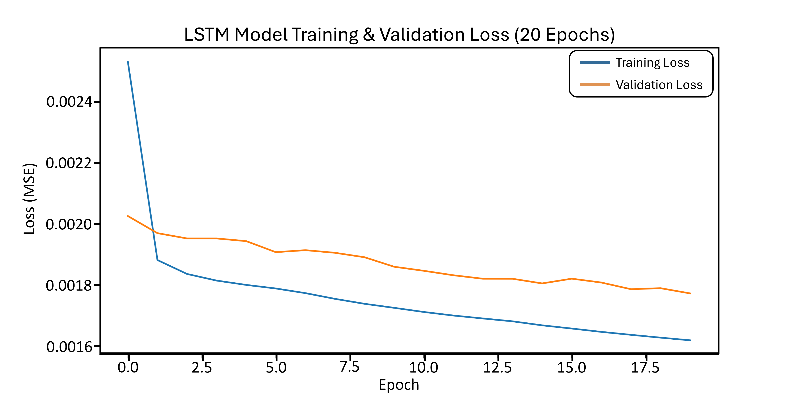
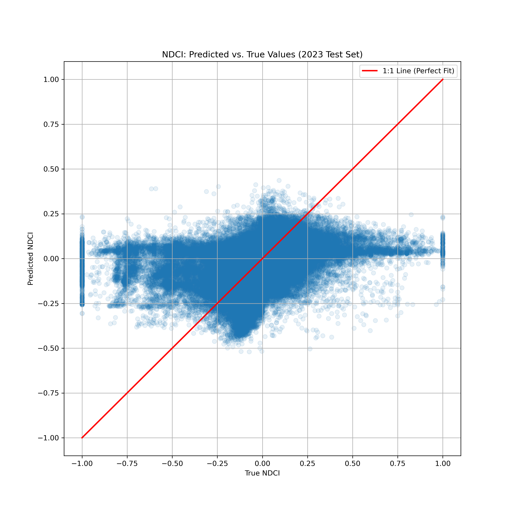
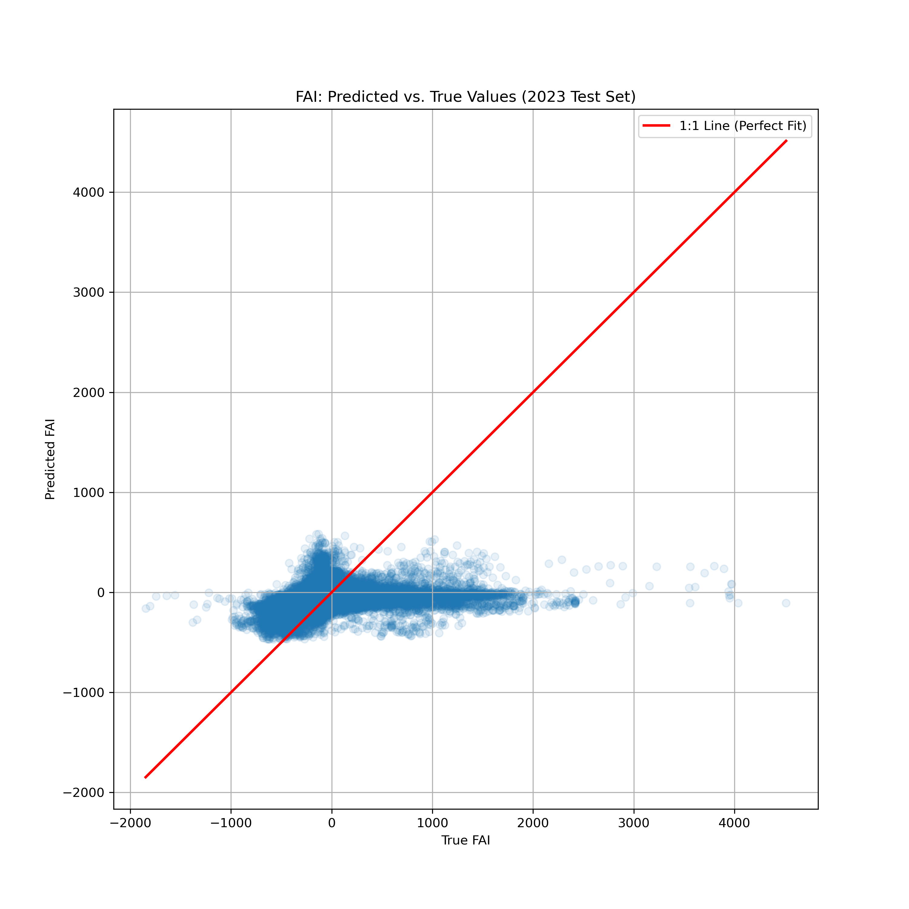

Gemini Analysis of LSTM:
1. Overall Diagnosis: The Model is Overfitting
This is a classic and very common result. In short, your model has "memorized" the training data but has failed to generalize what it learned to the new, unseen data.
It's like a student who memorizes the answers to last year's test but fails the real exam because they never learned the concepts.
2. Evidence from Your Plots
Here is how each plot proves this:
Plot 1: Training & Validation Loss
What we see: The blue line (Training Loss) goes down and down. This is good; it means the model is memorizing the training data.
The Problem: The orange line (Validation Loss) drops for one or two epochs and then flatlines.
What this means: The gap between the blue and orange lines is the "overfitting gap." It shows that after the first couple of epochs, all the model's "learning" was just memorization that didn't help it predict new data.
Plot 2 & 3: Predicted vs. True (NDCI & FAI)
What we see: The data points form a loose, circular "blob." They are not tight and linear along the red "Perfect Fit" line.
The Problem: For any true value (x-axis), the model is predicting a huge range of wrong values (y-axis). The FAI plot is even worse, showing almost no relationship at all.
What this means: The model is not making accurate predictions. It has learned the average range of the data (e.g., "NDCI is usually between 0.0 and 0.4") but has no idea when it should be high or low.
Plot 4: Time-Series for a Single Point
This is the most important plot.
What we see: The blue line (True NDCI) is dynamic, with sharp peaks and valleys. The orange line (Predicted NDCI) is almost a flat line.
What this means: The model has failed to learn the dynamics. It is not predicting the blooms (the peaks) or the clear water (the valleys). It has simply learned the average NDCI for that point and is predicting that average over and over.
Why Did This Happen? (The "Blinkered Horse" Problem)
Your LSTM model is failing because it's "spatially blind."
Think of each of your 5,000 points as a "horse" in a race. Your LSTM is like a horse with blinkers on. It only knows its own history. It can't see the other 4,999 horses around it.
Your hypothesis is that a discharge event at S77 moves downstream as a plume. To predict a bloom at Point 500 (by the coast), the model needs to "see" the bloom that was at Point 200 (upstream) three days earlier. Your current LSTM cannot see this spatial relationship.
The Next Step: The ConvLSTM
This "failure" is actually a fantastic and necessary step in your research. You have just scientifically proven that a simple temporal model (LSTM) is insufficient for this complex spatiotemporal problem.
This perfectly justifies the need for the more powerful model you originally asked about: the ConvLSTM (Convolutional LSTM).
An LSTM sees time.
A CNN (Convolutional Neural Network) sees space (like in an image).
A ConvLSTM sees both space and time simultaneously.
The ConvLSTM will look at the entire map of your estuary as a "movie" and learn how the plumes move and evolve.
Your New Action Plan
To feed the ConvLSTM, we must convert your 5,000 scattered points into "images."
Grid the Data (Rasterize): We will lay a 2D grid (e.g., 50x50 cells) over your AOI.
Average Points: For each day, we'll average all the points that fall inside each grid cell. This turns your "point cloud" into a 2D "image" of the bloom for that day.
Reshape for ConvLSTM: We will then stack these "images" into a 5D tensor that the ConvLSTM needs: [samples, timesteps, rows, cols, features].
9. ConvLSTM Model
Recommendation of XGBoost for classification model
The Goal: Points-to-Pixels
The plan is to convert your 5,000 scattered points into a regular 2D grid for every single day in your dataset. We're essentially
creating a "movie" where each frame is a 2D image of the estuary,
and each "pixel" in that image has a value for ndci, fai, and all your discharge features.
This involves three main steps:
1. Define a Grid:
We'll find the minimum and maximum latitude/longitude of all your points to define the "box" of your study area.
Then, we'll decide on a resolution (e.g., 50x50 or 100x100).
2. Bin the Points:
We'll create two new columns in your DataFrame, grid_row and grid_col,
by figuring out which grid cell each of your 5,000 points falls into.
3. Aggregate by Cell:
This is the key. We will groupby(['date', 'grid_row', 'grid_col']) and calculate the mean() of all values.
This combines the multiple points that might be in one grid cell into a single "pixel" value for that day.
Creating Grid Needed for the ConvLSTM Model:
import pandas as pd
import numpy as np
import os
# --- 1. Define Grid Resolution ---
# You can change this. A larger number gives a finer grid but
# may result in more empty cells. 50x50 is a good start.
GRID_ROWS = 50
GRID_COLS = 50
# --- 2. Load Your Final Feature Data ---
final_data_file = 'FINAL_MODEL_DATA_with_features.csv'
try:
df = pd.read_csv(final_data_file)
print(f"Successfully loaded '{final_data_file}'")
except FileNotFoundError:
print(f"ERROR: Cannot find file '{final_data_file}'")
raise
df['date'] = pd.to_datetime(df['date'])
print(f"Loaded {len(df)} rows.")
# --- 3. Define Grid Boundaries ---
# Find the min/max latitude and longitude to create our "box"
min_lon, max_lon = df['longitude'].min(), df['longitude'].max()
min_lat, max_lat = df['latitude'].min(), df['latitude'].max()
print(f"Grid bounds defined:")
print(f"Lon: {min_lon} to {max_lon}")
print(f"Lat: {min_lat} to {max_lat}")
# --- 4. Bin Points into Grid Cells ---
# Create the "bins" or edges for our grid
lon_bins = np.linspace(min_lon, max_lon, GRID_COLS + 1)
lat_bins = np.linspace(min_lat, max_lat, GRID_ROWS + 1)
# Use pd.cut to assign each point to a grid "row" and "col"
# Note: We use labels=False to get integer indices (0, 1, 2...)
df['grid_col'] = pd.cut(df['longitude'], bins=lon_bins, labels=False, include_lowest=True)
df['grid_row'] = pd.cut(df['latitude'], bins=lat_bins, labels=False, include_lowest=True)
# Handle any points that might fall exactly on the edge (rare)
df.dropna(subset=['grid_col', 'grid_row'], inplace=True)
df['grid_col'] = df['grid_col'].astype(int)
df['grid_row'] = df['grid_row'].astype(int)
print("All 5,000 points have been assigned to grid cells.")
# --- 5. Aggregate Data by Grid Cell ---
# This is the key "rasterizing" step.
# We group by date AND our new grid cells, then average all features.
print("Aggregating points by date and grid cell...")
# Get all columns we need to aggregate
# This is all features + all targets
agg_cols = [col for col in df.columns if col not in
['system:index', 'point_id', '.geo', 'latitude', 'longitude']]
# Group and aggregate
# .reset_index() moves 'date', 'grid_row', 'grid_col' back to columns
df_grid = df[agg_cols].groupby(['date', 'grid_row', 'grid_col']).mean().reset_index()
print("Aggregation complete.")
# --- 6. Fill in the Gaps (Create a Dense Tensor) ---
# The data is now "sparse" (only cells with points have data).
# We need to create a "dense" grid by adding all the empty cells (like open water)
# and filling them with 0.
# Create a complete index of ALL possible grid cells
all_rows = np.arange(0, GRID_ROWS)
all_cols = np.arange(0, GRID_COLS)
all_dates = df['date'].unique()
# Create the full "template" of all date/row/col combinations
full_index = pd.MultiIndex.from_product(
[all_dates, all_rows, all_cols],
names=['date', 'grid_row', 'grid_col']
)
# Set the index on our gridded data
df_grid = df_grid.set_index(['date', 'grid_row', 'grid_col'])
# Reindex our data to the full template, filling in gaps with 0
df_gridded_final = df_grid.reindex(full_index, fill_value=0).reset_index()
print("Gaps filled. Grid is now 'dense'.")
# --- 7. Save the Gridded Data ---
gridded_file_path = 'GRIDDED_model_data.csv'
df_gridded_final.to_csv(gridded_file_path, index=False)
print(f"\n✅ Success! Your gridded, ConvLSTM-ready data is saved to:")
print(gridded_file_path)
# Show a sample of the new gridded data
print(df_gridded_final.head())
Training ConvLSTM:
import pandas as pd
import numpy as np
from sklearn.preprocessing import MinMaxScaler
from tensorflow.keras.models import Sequential
from tensorflow.keras.layers import ConvLSTM2D, Dense, Dropout, Flatten, BatchNormalization
import os
import matplotlib.pyplot as plt
# --- 1. Define Grid and Model Parameters ---
GRID_ROWS = 50
GRID_COLS = 50
SEQUENCE_LENGTH = 10
PREDICT_AHEAD = 1
# --- 2. Load Your GRIDDED Dataset ---
gridded_data_file = 'GRIDDED_model_data.csv'
try:
df = pd.read_csv(gridded_data_file)
print(f"Successfully loaded '{gridded_data_file}'")
except FileNotFoundError:
print(f"ERROR: Cannot find file '{gridded_data_file}'")
raise
df['date'] = pd.to_datetime(df['date'])
df.sort_values(by=['date', 'grid_row', 'grid_col'], inplace=True)
# --- 3. Define Features (X) and Targets (y) ---
target_cols = ['ndci', 'fai']
feature_cols = [col for col in df.columns if col not in
['date', 'grid_row', 'grid_col', 'ndci', 'fai']]
print(f"Using {len(feature_cols)} features and {len(target_cols)} targets.")
# --- 4. Split Data by Time (CRITICAL) ---
print("Splitting data into Train, Validation, and Test sets...")
test_df = df[df['date'].dt.year == 2023].copy()
train_df = df[df['date'].dt.year < 2023].copy()
val_df = train_df[train_df['date'].dt.year == 2022].copy()
train_df = train_df[train_df['date'].dt.year < 2022].copy()
print(f"Training Set shape: {train_df.shape}")
print(f"Validation Set shape: {val_df.shape}")
print(f"Test Set shape: {test_df.shape}")
# --- 5. Scale the Data ---
scaler_features = MinMaxScaler()
scaler_targets = MinMaxScaler()
scaler_features.fit(train_df[feature_cols])
scaler_targets.fit(train_df[target_cols])
train_df[feature_cols] = scaler_features.transform(train_df[feature_cols])
train_df[target_cols] = scaler_targets.transform(train_df[target_cols])
val_df[feature_cols] = scaler_features.transform(val_df[feature_cols])
val_df[target_cols] = scaler_targets.transform(val_df[target_cols])
test_df[feature_cols] = scaler_features.transform(test_df[feature_cols])
test_df[target_cols] = scaler_targets.transform(test_df[target_cols])
print("All data has been scaled.")
# --- 6. Reshape Data into 5D Sequences ---
def create_sequences_5d(data, feature_cols, target_cols, rows, cols, seq_len, pred_ahead):
X_list, y_list = [], []
all_dates = data['date'].unique()
features = data[feature_cols].values
targets = data[target_cols].values
num_days = len(all_dates)
num_features = len(feature_cols)
num_targets = len(target_cols)
features_reshaped = features.reshape(num_days, rows, cols, num_features)
targets_reshaped = targets.reshape(num_days, rows, cols, num_targets)
for i in range(num_days - seq_len - pred_ahead + 1):
X_sequence = features_reshaped[i : i + seq_len]
y_target = targets_reshaped[i + seq_len + pred_ahead - 1]
X_list.append(X_sequence)
y_list.append(y_target)
return np.array(X_list), np.array(y_list)
print(f"Creating 5D sequences with {SEQUENCE_LENGTH} timesteps...")
X_train, y_train = create_sequences_5d(train_df, feature_cols, target_cols, GRID_ROWS, GRID_COLS, SEQUENCE_LENGTH, PREDICT_AHEAD)
X_val, y_val = create_sequences_5d(val_df, feature_cols, target_cols, GRID_ROWS, GRID_COLS, SEQUENCE_LENGTH, PREDICT_AHEAD)
X_test, y_test = create_sequences_5d(test_df, feature_cols, target_cols, GRID_ROWS, GRID_COLS, SEQUENCE_LENGTH, PREDICT_AHEAD)
print(f"Final training X shape: {X_train.shape}")
print(f"Final training y shape: {y_train.shape}")
# --- 7. Build and Train the ConvLSTM Model ---
num_features = X_train.shape[-1]
num_targets = y_train.shape[-1]
model = Sequential()
model.add(ConvLSTM2D(
filters=64,
kernel_size=(3, 3),
padding='same',
return_sequences=True,
input_shape=(SEQUENCE_LENGTH, GRID_ROWS, GRID_COLS, num_features)
))
model.add(BatchNormalization())
model.add(Dropout(0.2))
model.add(ConvLSTM2D(
filters=64,
kernel_size=(3, 3),
padding='same',
return_sequences=False
))
model.add(BatchNormalization())
model.add(Dropout(0.2))
model.add(Dense(units=num_targets))
model.compile(optimizer='adam', loss='mean_squared_error')
model.summary()
print("\n--- Starting Model Training for 100 Epochs ---")
# ⭐️ THIS IS THE ONLY CHANGE ⭐️
history = model.fit(
X_train, y_train,
epochs=100, # Changed from 20 or 50 to 100
batch_size=16,
validation_data=(X_val, y_val)
)
print("\n--- Model Training Complete ---")
# --- 8. Evaluate on Test Set ---
print("Evaluating model on unseen 2023 test set...")
test_loss = model.evaluate(X_test, y_test)
print(f"Test Loss (MSE): {test_loss}")
# --- 9. Run the full evaluation (plots) ---
# (This is the same code you ran last time,
# but it will use the new 50-epoch model)
print("\nGenerating evaluation plots...")
# (The rest of the plotting code from the previous step goes here...)
Evaluating ConvLSTM:
import matplotlib.pyplot as plt
import numpy as np
# --- 1. Evaluate Model on Test Set ---
print("Evaluating model on unseen 2023 test set...")
# This gives you the overall average loss for the entire dataset
test_loss = model.evaluate(X_test, y_test)
print(f"Test Loss (Scaled MSE): {test_loss}")
# --- 2. Make Predictions ---
print("\nGenerating predictions on the test set...")
# This will return a 4D tensor: [samples, rows, cols, targets]
y_pred_scaled = model.predict(X_test)
# --- 3. Un-scale the Data for Interpretation ---
# We must reshape the 4D data to 2D to un-scale it
# and then reshape it back.
# Get original shapes
n_samples, n_rows, n_cols, n_targets = y_pred_scaled.shape
# Reshape to 2D: [samples * rows * cols, targets]
y_pred_2d = y_pred_scaled.reshape(-1, n_targets)
y_test_2d = y_test.reshape(-1, n_targets)
# Un-scale
print("Un-scaling predictions...")
y_pred_unscaled = scaler_targets.inverse_transform(y_pred_2d)
y_test_unscaled = scaler_targets.inverse_transform(y_test_2d)
# Reshape back to 4D: [samples, rows, cols, targets]
y_pred_unscaled_4d = y_pred_unscaled.reshape(n_samples, n_rows, n_cols, n_targets)
y_test_unscaled_4d = y_test_unscaled.reshape(n_samples, n_rows, n_cols, n_targets)
print("Un-scaling complete.")
# --- 4. Plot Training & Validation Loss ---
print("\nPlotting training history...")
plt.figure(figsize=(10, 5))
plt.plot(history.history['loss'], label='Training Loss')
plt.plot(history.history['val_loss'], label='Validation Loss')
plt.title('ConvLSTM Model Training & Validation Loss Over Epochs')
plt.xlabel('Epoch')
plt.ylabel('Loss (MSE)')
plt.legend()
plt.show()
# --- 5. Plot Predicted vs. True Values (Scatter Plot) ---
# This gives us a statistical overview.
# We will only plot non-zero values (since 0s are just empty water)
true_vals_ndci = y_test_unscaled_4d[..., 0].flatten()
pred_vals_ndci = y_pred_unscaled_4d[..., 0].flatten()
true_vals_fai = y_test_unscaled_4d[..., 1].flatten()
pred_vals_fai = y_pred_unscaled_4d[..., 1].flatten()
# Filter out the 0-padded cells for a cleaner plot
mask = true_vals_ndci != 0
print("\nPlotting NDCI: Predicted vs. True")
plt.figure(figsize=(10, 10))
plt.scatter(true_vals_ndci[mask], pred_vals_ndci[mask], alpha=0.1)
plt.plot([true_vals_ndci[mask].min(), true_vals_ndci[mask].max()],
[true_vals_ndci[mask].min(), true_vals_ndci[mask].max()],
color='red', lw=2, label='1:1 Line (Perfect Fit)')
plt.title('ConvLSTM: Predicted vs. True NDCI (2023 Test Set)')
plt.xlabel('True NDCI')
plt.ylabel('Predicted NDCI')
plt.legend()
plt.grid(True)
plt.show()
# --- 6. Plot Predicted vs. True MAPS (The REAL Test) ---
# This shows us the spatial performance
print("\nPlotting sample comparison maps...")
# Let's show a few days from the test set
# You can change these indices to see different days
sample_days = [10, 50, 100, 150, 200]
for day_index in sample_days:
if day_index >= len(y_test_unscaled_4d):
continue
# Get the "image" for NDCI (target index 0)
true_map_ndci = y_test_unscaled_4d[day_index, :, :, 0]
pred_map_ndci = y_pred_unscaled_4d[day_index, :, :, 0]
# Get the "image" for FAI (target index 1)
true_map_fai = y_test_unscaled_4d[day_index, :, :, 1]
pred_map_fai = y_pred_unscaled_4d[day_index, :, :, 1]
# Mask out the 0-value cells to make them white
true_map_ndci[true_map_ndci == 0] = np.nan
pred_map_ndci[pred_map_ndci == 0] = np.nan
true_map_fai[true_map_fai == 0] = np.nan
pred_map_fai[pred_map_fai == 0] = np.nan
# Find common min/max for the colorbar
vmin_ndci = min(np.nanmin(true_map_ndci), np.nanmin(pred_map_ndci))
vmax_ndci = max(np.nanmax(true_map_ndci), np.nanmax(pred_map_ndci))
vmin_fai = min(np.nanmin(true_map_fai), np.nanmin(pred_map_fai))
vmax_fai = max(np.nanmax(true_map_fai), np.nanmax(pred_map_fai))
# --- Plot NDCI ---
fig, axes = plt.subplots(1, 2, figsize=(14, 6))
im1 = axes[0].imshow(true_map_ndci, cmap='viridis', vmin=vmin_ndci, vmax=vmax_ndci)
axes[0].set_title(f'True NDCI - Day {day_index}')
axes[0].axis('off')
im2 = axes[1].imshow(pred_map_ndci, cmap='viridis', vmin=vmin_ndci, vmax=vmax_ndci)
axes[1].set_title(f'Predicted NDCI - Day {day_index}')
axes[1].axis('off')
fig.colorbar(im1, ax=axes, orientation='horizontal', fraction=0.046, pad=0.04)
plt.suptitle(f'NDCI Comparison - Test Set Day {day_index}', fontsize=16)
plt.show()
# --- Plot FAI ---
fig, axes = plt.subplots(1, 2, figsize=(14, 6))
im1 = axes[0].imshow(true_map_fai, cmap='viridis', vmin=vmin_fai, vmax=vmax_fai)
axes[0].set_title(f'True FAI - Day {day_index}')
axes[0].axis('off')
im2 = axes[1].imshow(pred_map_fai, cmap='viridis', vmin=vmin_fai, vmax=vmax_fai)
axes[1].set_title(f'Predicted FAI - Day {day_index}')
axes[1].axis('off')
fig.colorbar(im1, ax=axes, orientation='horizontal', fraction=0.046, pad=0.04)
plt.suptitle(f'FAI Comparison - Test Set Day {day_index}', fontsize=16)
plt.show()
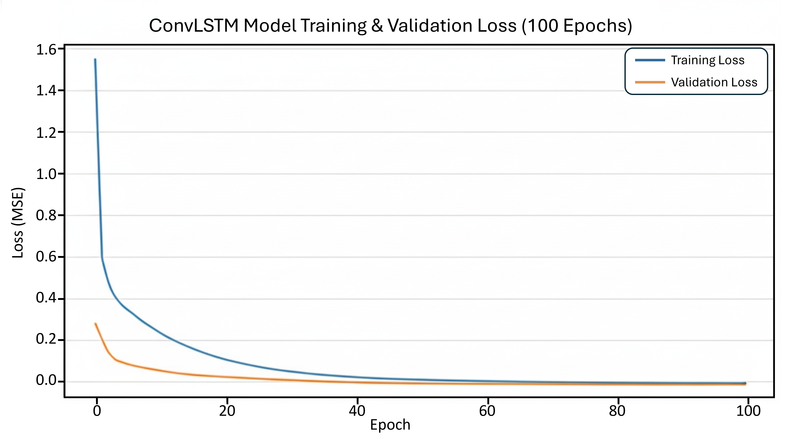
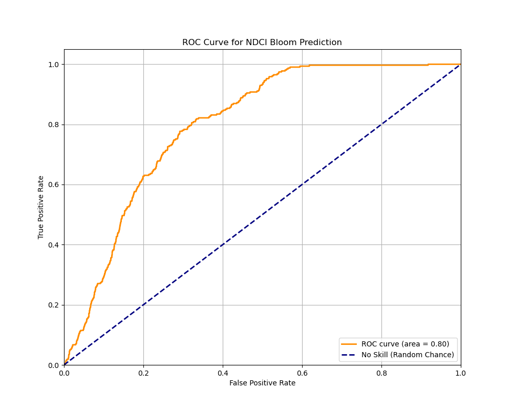
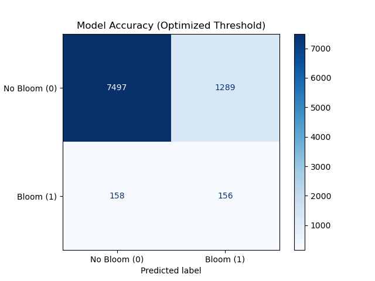
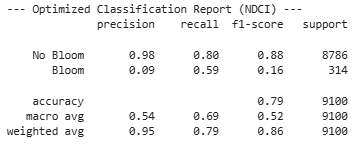
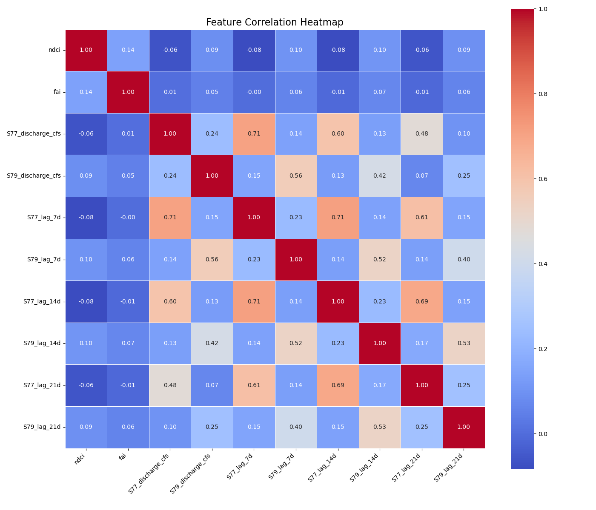
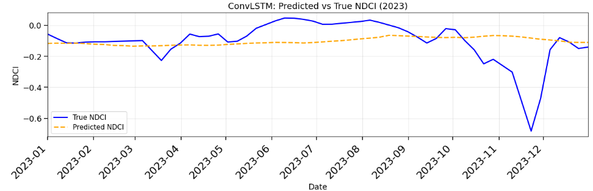